Falcon 开放语言模型系列
论文发布日期
作者： Ebtesam Almazrouei、Hamza Alobeidli、Abdulaziz Alshamsi、Alessandro Cappelli、Ruxandra Cojocaru、Mérouane Debbah、Etienne Goffinet、Daniel Hesslow、Julien Launay、Quentin Malartic、Daniele Mazzotta、Badreddine Noune、Baptiste Pannier、Guilherme Penedo
机构： 阿布扎比技术创新研究院
论文版本： arXiv:2311.16867v2，2023 年 11 月 29 日
译文说明： 本译文按原论文的论述顺序逐段编排，标题、正文与图表说明均译为中文；模型名、数据集名和技术缩写保留通行写法。图、表、复杂伪代码、模型卡和参考文献以对应整页截图保留。
摘要
我们介绍 Falcon 系列：包含 70 亿、400 亿和 1800 亿参数的纯解码器因果语言模型，它们在多样化的高质量语料上训练，语料主要由网络数据构成。最大的 Falcon-180B 使用超过 3.5 万亿文本词元训练，是当时公开记录中规模最大的预训练运行。Falcon-180B 显著超过 PaLM、Chinchilla 等模型，也改进了同期开发的 LLaMA 2 和 Inflection-1；它以更低的预训练和推理成本接近 PaLM-2-Large 的性能。据我们所知，这使它与 GPT-4、PaLM-2-Large 一同成为当时世界上最好的三个语言模型之一。
我们报告详细评估，并深入介绍预训练 Falcon 所采用的方法与定制工具。特别是，我们说明了定制的分布式训练代码库；借助它，可以在互连带宽有限的 AWS 云基础设施上，使用多达 4096 块 A100 高效预训练这些模型。我们还发布网络数据集中的 6000 亿词元子集，并以宽松许可证发布 Falcon-7B、Falcon-40B 和 Falcon-180B，以促进开放科学，加速构建大型语言模型的开放生态系统。
图 1：Falcon 系列取得了有竞争力的性能，Falcon-180B 的单样本性能接近 PaLM-2 Large。 图中比较 PaLM [Chowdhery 等，2022]、PaLM-2 [Anil 等，2023] 与 Falcon-180B 在 Brown 等 [2020] 所用一组任务上的单样本性能。这些结果只是完整评估的一小部分；与 GPT-3.5/4、LLaMA-1/2 和 Inflection-1 的详细比较见第 6 节。
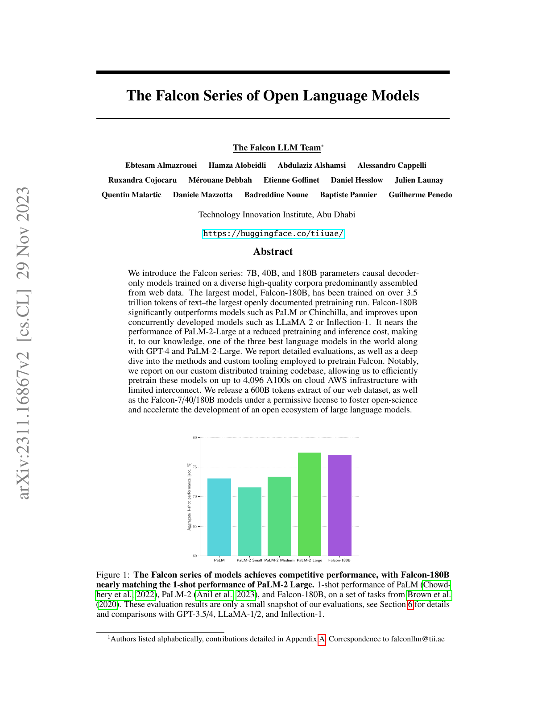
1 引言
语言模型正在经历的“寒武纪大爆发”，主要由流行的 Transformer 方案所具有的独特可扩展性推动。这种可扩展性表现在多个方面：
- 性能可扩展性与可预测性。 增加预训练计算预算，会以稳定、可预测的方式系统性改善语言建模能力 [Kaplan 等，2020]。Falcon-180B 是第一个公开记录、规模达到 GPT-3 水平且遵循 Hoffmann 等 [2022] 新版缩放定律建议的模型；它的总预训练长度达到 3.5 万亿词元，且没有对任何数据提高采样比例。
- 数据可扩展性。 为了高效扩大预训练规模，并把预训练计算与推理计算解耦，规模不断增大的模型应当使用更大的语料训练更长时间。为支撑 Falcon 系列，我们开发了 RefinedWeb [Penedo 等，2023]，这是一个包含 5 万亿词元、经过高质量过滤和去重的网络数据集，也是当时公开记录中规模最大的此类数据集。
- 硬件可扩展性。 Transformer 模型 [Vaswani 等，2017] 天然适合针对通用矩阵乘法优化的现代硬件，使训练和推理可以高效分布在大量加速器上 [Narayanan 等，2021b；Pope 等，2023]。通过 Falcon-180B，我们证明预训练可以扩展到 4096 块 40GB A100；在经济高效的 AWS 云基础设施上，每块加速器只需要 50Gbps 互连带宽。
在这些基础之上，越来越大的语言模型会产生所谓的涌现能力 [Wei 等，2022a]。这些能力还可以进一步按照人类偏好调整，以构建指令遵循模型或聊天模型 [Ouyang 等，2022]。这些方法共同推动大型语言模型被广泛部署到面向消费者的应用中，例如 ChatGPT（GPT-3.5/4，OpenAI [2023a]）、Claude、Bard（PaLM-2，Anil 等 [2023]）和 Pi（Inflection-1，Inflection [2023]）。本文主要报告 Falcon 系列模型的预训练，把后续下游微调与对齐留给未来工作。
Falcon 系列由三个纯解码器因果模型组成，最多使用 4096 块 A100 训练。我们组建了包含 3.5 万亿词元的预训练数据集，数据主要来自 RefinedWeb [Penedo 等，2023]，即一个经过大规模过滤和去重的网络数据集。模型架构以 PaLM [Chowdhery 等，2022] 为基础，不过我们独立验证了每项决策，最终做出少量调整，细节见第 4 节。Falcon 系列使用大量定制工具，包括预训练代码库与数据流水线。这些工具从 2022 年 8 月开始开发，模型训练则在 2022 年 12 月启动。深入评估显示，Falcon 系列在不同规模上都具有竞争力；Falcon-180B 的性能接近 PaLM-2 Large，使它成为当时最好的开放模型，并跻身所有语言模型前三名。
1.1 主要贡献
通过本文与 Falcon 系列，我们作出以下贡献：
- 公开记录大规模模型的预训练。 近期最先进模型公开的技术记录很少，妨碍了该领域进一步研究和发展。与这些工作不同，我们详细记录 Falcon 系列的预训练过程。
- 开放数据与模型。 为加快研究并支持社区驱动的大型语言模型改进，我们公开发布 Falcon-7B、Falcon-40B、Falcon-180B，以及 RefinedWeb 数据集的 6000 亿词元子集：
https://huggingface.co/tiiuae/。
表 1：Falcon 系列依靠大规模网络数据覆盖广泛的能力和推理需求。 Falcon-7B 可以在 Apple M2 等消费级硬件上高效运行，Falcon-180B 通常需要专用推理基础设施，例如 8 块 80GB A100。整个系列的零样本性能随规模稳定提高。Falcon-7B、40B、180B 的训练词元数分别为 1.5 万亿、1 万亿与 3.5 万亿，计算量分别为 730、2800 与 43500 PF-days，训练分别使用 384、384 与 4096 块 A100。
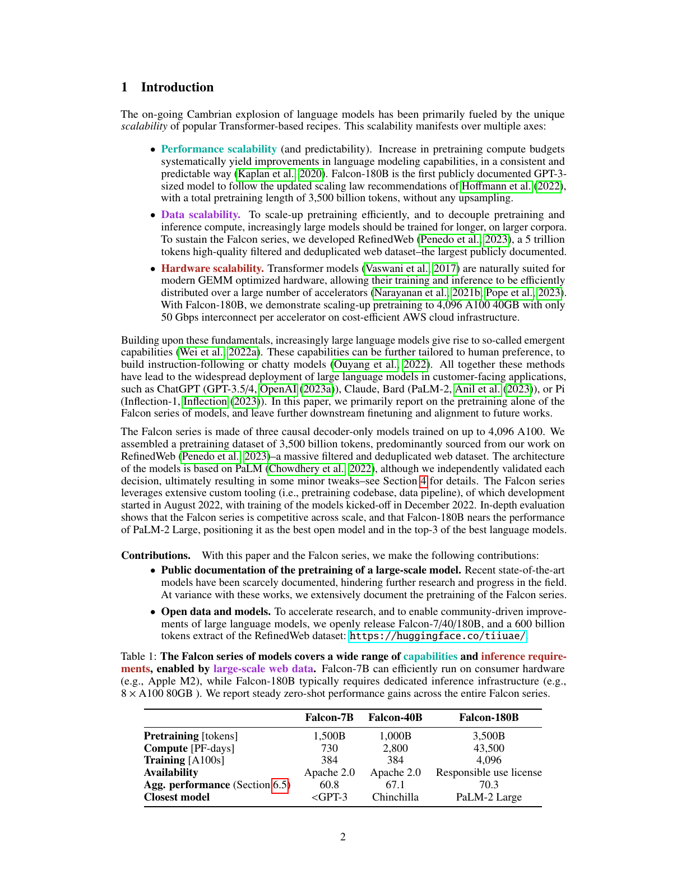
目录
- 1 引言
- 2 从语言建模到前沿模型的最新进展
- 3 设计理念
- 4 数据、架构与超参数的实验和动机
- 4.1 小规模实验设置
- 4.2 数据：网络数据与精选语料，以及代码和多语言数据对英语性能的影响
- 4.3 架构与预训练：验证流行方案和推理优化
- 4.4 仍需进一步实验的候选方案
- 4.5 验证整体数据集与架构方案
- 5 实现
- 5.1 Falcon 数据集
- 5.2 Falcon 架构与高效、稳定训练方案
- 5.3 使用 Gigatron 在云基础设施上进行大规模分布式训练
- 5.4 运行管理
- 6 结果
- 7 局限
- 8 结论
- 附录 A 至 G
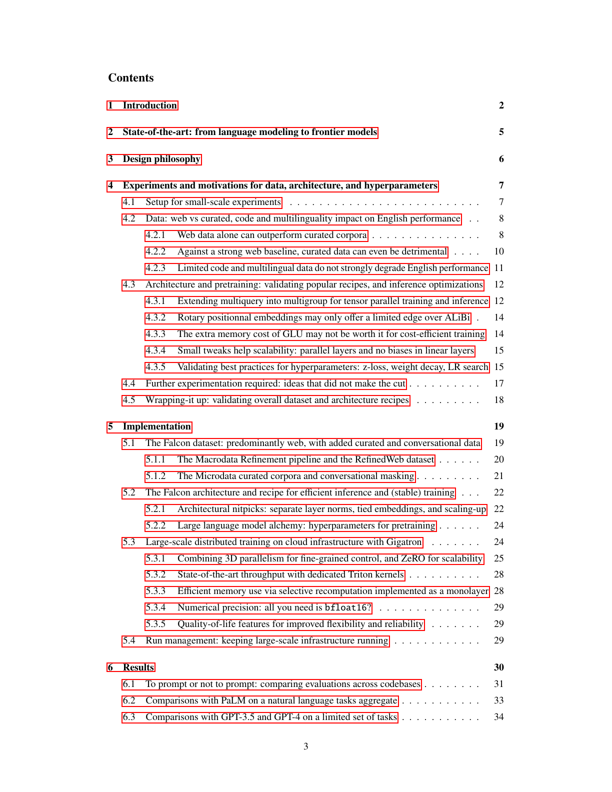
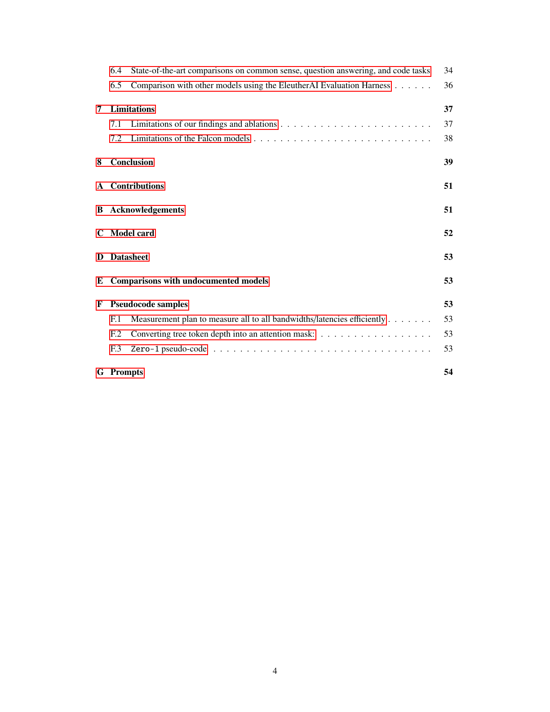
2 从语言建模到前沿模型的最新进展
本节概述 Falcon 系列相邻领域的总体趋势和研究工作。关于各项技术组件的深入文献回顾，参见相应章节。
2.1 语言建模
在面向特定语料或任务的方法之外，早期大规模向量词嵌入方法 [Mikolov 等，2013；Pennington 等，2014] 开创了从海量非结构化文本语料中进行无监督学习的路线。深度循环神经架构的引入，使模型能够处理一词多义并整合上下文信息 [Peters 等，2018]；此后又出现迁移学习范式，利用通用模型，再通过微调使其专门适应下游任务 [Howard 与 Ruder，2018]。尽管当时已经存在许多今天仍在使用的基本原理，早期扩大规模的尝试 [Jozefowicz 等，2016] 只取得了好坏参半的结果，部分原因是循环方法实现繁琐，而且在常见硬件上缺乏可扩展性。
2.2 Transformer 模型
基于注意力的 Transformer 架构 [Vaswani 等，2017] 出现后，能够生成高效通用模型的方案迅速涌现：既有以嵌入和分类为重点的纯编码器 BERT [Kenton 与 Toutanova，2019]，也有纯因果解码器 GPT [Radford 等，2018]。特别是 GPT-2 [Radford 等，2019] 首次通过一个模型系列普及了涌现式少样本泛化能力，使模型只根据上下文中的指令和示例，就可以理解并执行任意任务。
2.3 大型语言模型
上述工作奠定了当代模型的关键组件；最后一块拼图是规模扩展，它由 GPT-3 [Brown 等，2020] 展示，又因缩放定律的提出 [Kaplan 等，2020] 得到确立。随着越来越多计算资源投入模型预训练，语言建模性能也获得相应提升。通过扩大规模直接、系统地得到能力更强的语言模型，这一诱人前景引发了“规模扩展热潮”：首先出现 Jurassic-1 [Lieber 等，2021]、PanGu-Alpha [Zeng 等，2021] 等 GPT-3 复现，以及 GPT-J [Wang 与 Komatsuzaki，2021]、OPT [Zhang 等，2022]、BLOOM [Scao 等，2022a] 等开放项目；随后又有 Gopher [Rae 等，2021]、MT-NLG [Smith 等，2022]、PaLM [Chowdhery 等，2022] 等进一步突破规模上限的工作。
大型语言模型的开发和采用增多，也促使预训练方法继续改进。Hoffmann 等 [2022] 尤其通过 Chinchilla 证明，最优扩展实际上应当同时增加模型规模与预训练数据集规模。为了在现实中部署，人们甚至可能希望把训练推进到所谓的最优点之后，以解耦训练与推理计算并降低服务成本。LLaMA 模型 [Touvron 等，2023a、2023b] 展示了这一点：70 亿、130 亿、300 亿和 700 亿参数的模型最多使用 2 万亿词元训练。
2.4 前沿模型
与本工作同期，所谓的前沿模型开始出现。尽管定义不断变化，它们通常指“能力超过当前最先进现有模型，并能执行范围广泛任务的大规模机器学习模型”。虽然目标会不断移动，我们仍把近期 GPT-4 [OpenAI，2023a] 与 PaLM-2 [Anil 等，2023] 的工作视为这一类别的早期贡献。它们的突出特点是计算预算显著增加、能力进一步改善。我们如何处理未公开技术细节的模型，见附录 E。
图 2：虽然开放模型在预训练计算量上落后闭源模型约 18 个月，但差距并未继续扩大。 GPT-3 在约一年后引发规模扩展热潮，大量大型语言模型由此出现。对开源模型而言，计算量超过 10000 PF-days 的模型仍然很少。
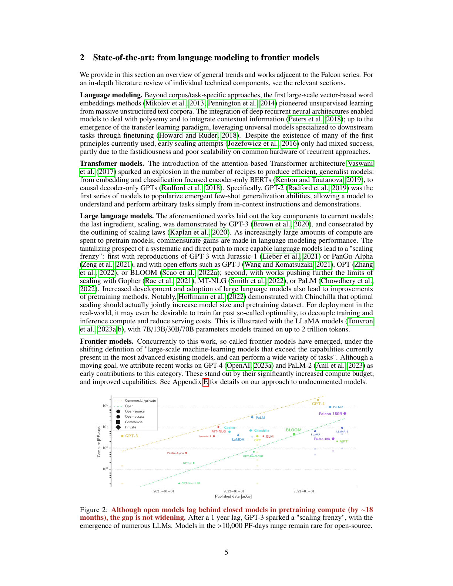
3 设计理念
受“苦涩的教训”[Sutton，2019] 启发，我们相信，能够最好利用计算资源的可扩展方法最终最有效。因此，设计 Falcon 系列时，我们主要围绕三个维度关注可扩展性：性能、数据与硬件。
3.1 性能可扩展性
大型语言模型规模持续增长，如图 2 所示，背后的主要动机是所谓的缩放定律：预训练计算量增加，语言建模能力也会相应改善 [Hestness 等，2017；Kaplan 等，2020]。与等待偶尔出现、能够改变范式的研究灵感相比，这条系统性改善模型的路径已经证明可靠得多。然而，上游和下游性能不只是扩大规模的动机，也是推动扩展的强大力量。要维持小规模消融实验所提供的反馈循环，量化建模干预的影响至关重要，例如架构调整、数据来源和超参数选择。
不过，应当量化什么并不是一个简单问题：仅看上游性能可能与下游任务表现冲突 [Tay 等，2021]，下游指标甚至也可能与人类偏好不一致 [Stiennon 等，2020]。预训练目标与常见下游用途之间存在根本差异，使问题更加困难：前者是在主要由网络数据组成的语料上预测下一个词，后者则是以有用、无害、诚实的方式遵循用户指令 [Bai 等，2022a]。由于我们关注 Falcon 模型的预训练阶段，因此选择以 EleutherAI Harness [Gao 等，2021] 为工具，重点评估模型在大量自然语言任务集合上的零样本和少样本泛化能力；设置与 Le Scao 等 [2022]、Wang 等 [2022a] 类似。
我们构建任务集合，以便与其他最先进模型比较，但也注意到，开展符合原则的比较十分困难：不同论文在任务选择、提示方式甚至评估模式方面差异很大，标准化基准仍然很少得到采用。第 7 节将讨论评估设置的局限。
3.2 数据可扩展性
增加的预训练计算预算既可以用于扩大模型，也可以用于延长训练。Kaplan 等 [2020] 最初发现，最优扩展主要由模型规模驱动；Hoffmann 等 [2022] 后来修正这一结论，认为模型和数据共同扩展更好，影响见图 3。此外，增大模型也会提高推理负担，而扩大预训练数据集却与推理成本解耦。近期开放模型已经使用最多 2 万亿词元的数据集训练 [Touvron 等，2023b]。由于简单重复数据可能使模型退化 [Hernandez 等，2022；Muennighoff 等，2023]，这引发了人们对数据扩展可持续性的担忧 [Villalobos 等，2022]。
人们普遍认为，构建最先进模型必须使用精选语料，需要人工添加 arXiv 论文、图书等单独来源 [Brown 等，2020；Gao 等，2020]，这进一步加剧了担忧。对于 Falcon 系列，我们选择通过严格过滤和去重扩大高质量网络数据，收集出包含 5 万亿词元的英文网络数据集，并在训练期间不重复任何数据。Penedo 等 [2023] 对这项工作作了详细报告，本文也会提供若干关键要点。
3.3 硬件可扩展性
大规模训练要求数千个硬件加速器高效协同；为了充分利用这些加速器，又需要符合原则的分布式训练方法 [Shoeybi 等，2019]。能够高效运行并利用大规模计算资源的方法，往往最容易在社区中普及 [Hooker，2021]，Transformer 架构本身就是最好的例子 [Vaswani 等，2017]。此外，与数据等因素相比，很难找到能够显著改善模型任务性能的架构变化 [Le Scao 等，2022]。因此，我们的架构决策不以改善任务性能为重点，而是着重提高硬件可扩展性与吞吐量。我们也关心推理可扩展性 [Pope 等，2023]，因此采用经过修改的多查询注意力方案 [Shazeer，2019] 等调整。
除可扩展性外，我们还关注成本效率并依赖已经得到验证的方法。我们重新实现三维并行策略 [Narayanan 等，2021b]，并结合优化器分片 [Rajbhandari 等，2020]，从而可以在互连带宽有限、成本更低的 AWS 云基础设施上运行。我们也高度重视节省内存的方法，使训练可以使用价格更低的 40GB A100。从零开始重新实现数据预处理和预训练流水线，让我们能够全面验证这些系统，而不是依赖未知的外部代码库。我们也没有探索状态空间模型 [Fu 等，2022] 等相较经典大型语言模型设计的激进变化，因为这些方法通常尚未经过大规模验证。
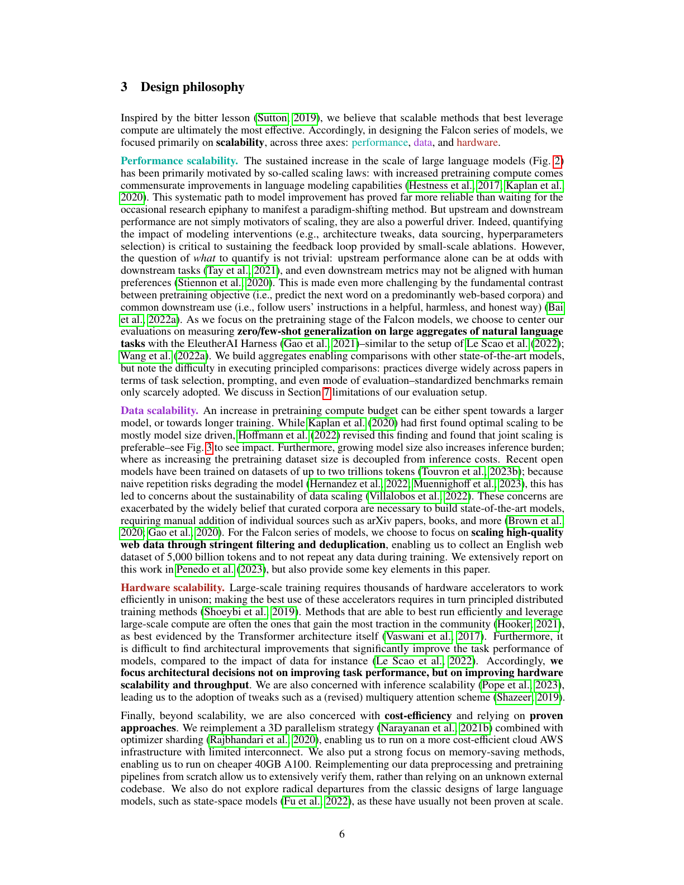
4 数据、架构与超参数的实验和动机
我们首先针对 10 亿至 30 亿参数模型开展一系列小规模实验，以验证推荐实践并找出值得关注的调整。我们还进行了大量实验来验证网络数据流水线，结果另见 Penedo 等 [2023]。对于每个研究主题，我们也会概述常见实践，以及探索该方向的动机。
4.1 小规模实验设置
小模型。 在这些消融实验中，我们希望以有限计算成本快速迭代。因此，我们分别训练 10 亿和 30 亿参数模型，训练词元数分别为 300 亿与 600 亿。选择这些较短训练长度，是为了近似 Hoffmann 等 [2022] 所述的计算最优区域；更大的模型也可能在该区域训练。参考架构和超参数以 GPT-3 [Brown 等，2020] 为基础，但使用 ALiBi 位置嵌入作为基线 [Press 等，2022]。利用 32 至 64 块 A100 等合理规模的资源，这些消融模型可以在一夜或数天内训练完成，从而支持快速迭代。
不过，小模型可能无法体现大模型的部分行为。例如，Dettmers 等 [2022] 发现，规模达到 60 亿参数时会出现异常特征，并影响量化；数据重复与记忆问题也被证明会不成比例地影响大模型 [Carlini 等，2022；Hernandez 等，2022]。
专用任务集合。 小模型虽然支持快速迭代，但零样本能力有限；如果直接批量评估，大多数任务的结果都会接近随机基线，评估噪声也会很大。我们使用在 The Pile 子集上训练的模型，找出在小规模下既有合理性能、不同运行之间波动又较小的任务。我们独立量化了 50 多个任务的方差与平均性能：架构实验使用五次不同随机种子的运行，数据实验使用十次不同数据子集和打乱方式的运行。
根据分析，我们从 Brown 等 [2020]、Le Scao 等 [2022] 和 Srivastava 等 [2023] 的评估设置中选取 11 个任务，构成消融实验使用的 zs-main、zs-data 与 zs-web 集合。这三个子集的差异主要来自不同时间和团队的实践差异。zs-comp 是 main 的子集，用于与其他模型比较，其中只包含经常报告的任务。对于架构，我们还报告 The Pile [Gao 等，2020] 上的困惑度 ppl-pile；对于数据实验，我们发现 The Pile 困惑度主要体现格式而不是内容差异，因此不采用。我们另设一个只含三个低方差自然语言处理任务的受限子集 zs-small。
小规模评估同时使用 EleutherAI Harness [Gao 等，2021] 与 BigBench [Srivastava 等，2023]。需要注意，这一设置下的推理和评估代码库，与第 6 节最终结果所用代码差异很大，因此数值不能直接比较。表 2 概述这些集合。
表 2：用于小模型消融评估的四个任务集合。 这些 10 亿或 30 亿参数模型分别使用 300 亿或 600 亿词元训练。四个集合从 11 个任务中选取任务，衡量零样本性能和困惑度。我们在 The Pile 子集和不同随机种子上训练了 15 个参考模型，以找出在该规模下优于随机基线且波动较小的任务。除来自 BigBench 的日期任务外，全部评估使用 EAI Harness。该设置只覆盖自然语言能力。
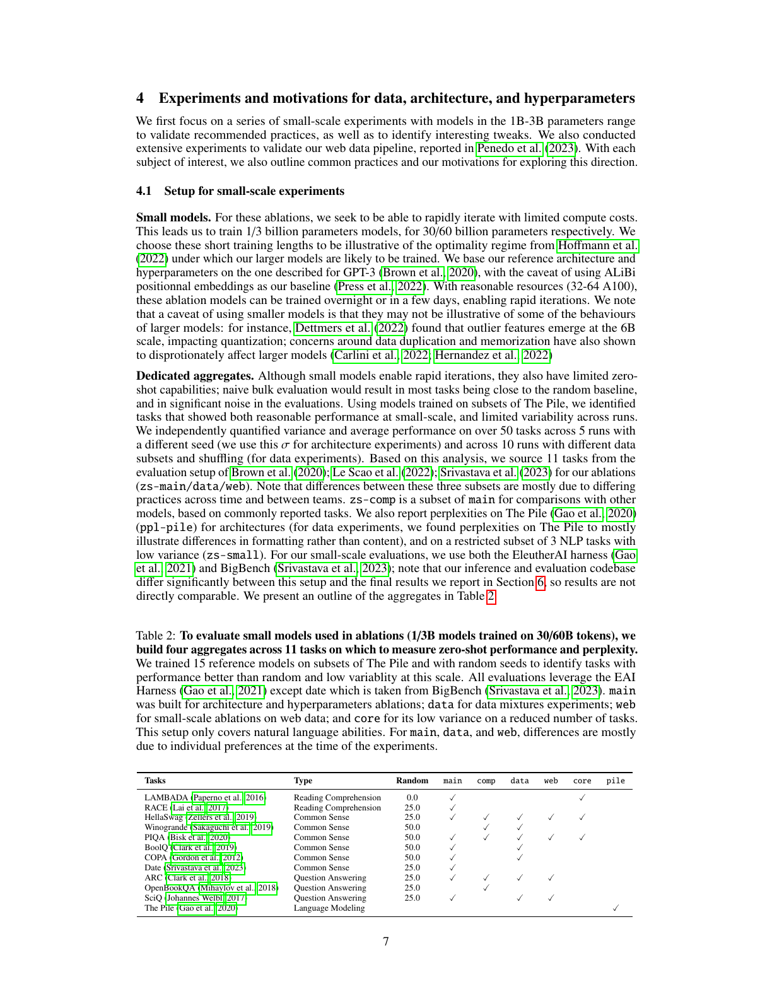
4.2 数据：网络与精选语料，以及代码和多语言数据对英语性能的影响
4.2.1 仅使用网络数据也能超过精选语料
我们为何主要使用网络数据、数据处理流水线的细节和大量评估，均在 RefinedWeb 专文 [Penedo 等，2023] 中详述。本节只强调促使我们把工作重点放在网络数据上的关键消融实验。
背景。 从较简单、较浅的统计语言模型诞生之初 [Shannon，1951；Mikolov 等，2013] 开始，自然语言处理就一直利用海量非结构化文本语料。最初这些语料按句子构建 [Chelba 等，2013]；更先进架构出现后，模型可以更充分利用完整文档中的长上下文信息 [Devlin 等，2018；Radford 等，2018]。数据集从 Wikipedia、BookCorpus [Zhu 等，2015] 等单一领域来源起步，随后与模型一同扩大，大规模网络抓取逐渐普及 [Ortiz Suárez 等，2019；Raffel 等，2019]。
不过，人们普遍认为，仅使用网络数据不足以构建高性能模型 [Brown 等，2020；Gao 等，2020]。因此，大型语言模型通常在混合语料上训练，将大规模网络数据与所谓高质量的单独精选来源结合，例如图书、技术论文和社交媒体对话。常见预训练配比概览见表 3。
正如第 3 节的数据可扩展性讨论所述，为现代语言模型预训练收集数万亿词元并不容易。因此，我们开始质疑精选数据是否从根本上优于网络数据。我们在 Lee 等 [2022] 的工作基础上，研究严格去重与受 Rae 等 [2021] 启发的广泛过滤，能否使模型仅靠网络数据也取得高性能。
研究问题。 按自然语言零样本性能衡量，经过过滤和去重的网络数据能否独立用于训练，并超过使用精选数据训练的模型？
方法。 我们使用多个目标数据集及数据流水线的中间产物，训练 10 亿和 30 亿参数模型，训练词元数分别为 270 亿和 600 亿。最先进网络数据集包括 OSCAR 的两个版本 [Ortiz Suárez 等，2019；Abadji 等，2022] 和 C4 [Raffel 等，2019]。精选数据使用最流行的预聚合数据集 The Pile [Gao 等，2020]；许多模型也选择以 The Pile 的特定组成部分作为预训练数据 [Smith 等，2022；Zhang 等，2022]。
RW-Raw 是流水线中经过最少过滤的输出，位于文本提取之后；不过它已经应用英文识别，并用网址黑名单去除已知成人内容。RW-Filtered 应用第一轮启发式规则，类似 Rae 等 [2021] 的做法。RefinedWeb 是最终网络数据集，分两个阶段应用去重。所有模型均在 zs-web 集合上评估，构成细节见表 2。
表 3：遵循 Hoffmann 等 [2022] 的建议，预训练数据集规模不断增加，网络数据所占比例也随之提高。 网络数据源指 C4 等来自 Common Crawl 的大规模网络抓取；精选网络数据会进行有针对性的领域过滤，例如 CC-News；arXiv、Wikipedia、PubMed 等归为技术精选数据；Reddit、HackerNews、StackOverflow 等归为对话数据。表中报告用于预训练的词元量，而不是整个数据集的大小。
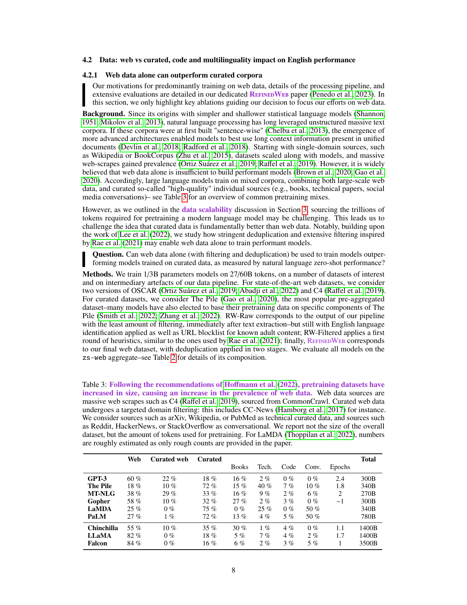
图 3：预训练实践的两个时代，从主要扩大模型规模转向同时扩大模型和数据。 Hoffmann 等 [2022] 之前，模型通常遵循 Kaplan 等 [2020] 的建议，在约 3000 亿词元的固定数据集上主要增加参数量。此后，模型开始同时扩大模型与数据集规模，使可扩展数据流水线的需求急剧增加。图中 Common Crawl 可用清洁数据量的估计来自 Penedo 等 [2023]，且只考虑英语；如果允许多语言，估计值将翻倍。
结果。 这轮实验结果见表 4。与预期一致，原始网络数据 RW-Raw 表现较差；OSCAR-22.01 同样是所有数据集中表现最差的版本，可能是因为创建者默认发布的数据没有应用去重。相比之下，OSCAR-21.09 和 C4 都是强基线。特别值得注意的是，The Pile 很可能并不优于网络数据。
数据流水线的后续阶段显著提升了数据集质量和训练模型的性能。仅靠过滤就能缩小与 The Pile 的差距；再加入严格去重后，RefinedWeb 成为我们评测的数据集中表现最好的一个。
这些实验有两项局限。第一，模型较小，训练数据量也有限。不过，去重带来的收益很可能随模型规模增大而增加，因为大模型对重复更敏感 [Hernandez 等，2022]，也更容易记住单个样本 [Carlini 等，2022]。第二，评估集中于自然语言任务。例如，The Pile 明确包含代码，而大规模网络抓取除了偶然出现的内容外很可能几乎没有代码，因此只用网络数据训练的模型不太可能在代码任务上胜过使用 The Pile 的模型。
发现： 与常见的数据质量观念不同，经过过滤与去重的网络数据本身，就足以让模型在自然语言任务上达到使用精选数据训练的模型的性能。
表 4：精选语料并不是零样本泛化的万能方案。 使用 RefinedWeb 训练的小模型，超过了使用 C4、OSCAR 等网络数据和 The Pile 等精选语料训练的模型。所有模型使用相同架构、超参数和词元量。结果显示，过滤和去重都会显著改善零样本性能。
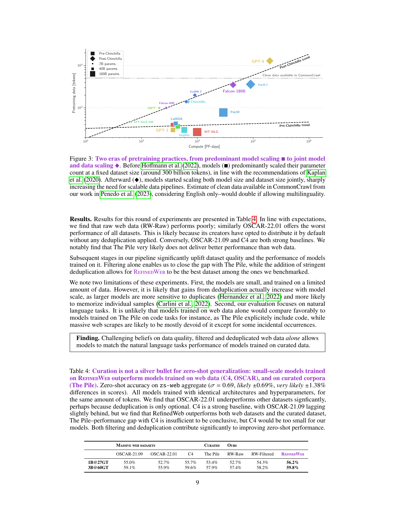
表 5：精选数据的三类来源。 对话数据包括 Reddit、HackerNews、OpenSubtitles、Ubuntu IRC、YouTube 字幕和 StackOverflow；图书数据使用 Project Gutenberg；技术数据包括 arXiv、PubMed Central、PubMed 摘要与美国专利。
4.2.2 面对强网络基线，精选数据甚至可能有害
背景。 第 4.2.1 节和表 3 已经指出，大型语言模型通常使用同时包含大规模网络抓取与单独精选来源的预训练数据集。精选来源最初用于构建领域专用模型 [Beltagy 等，2019]，也被用于扩展模型表达形式，例如补充对话模态 [Adiwardana 等，2020；Thoppilan 等，2022]。有些来源位于强精选数据与网络抓取的交叉处，例如 Laurençon 等 [2022] 建议使用人工选择的网址作为抓取的初始链接。
不过，这些定制来源会给实践者带来挑战。第一，单独语料远不如大规模网络抓取容易扩展，因为它们需要分散处理，而不能使用统一流水线。第二，一些来源的提供者已经开始采取措施，禁止用其数据训练大型语言模型 [Paresh，2023]，取得适当许可证可能成本高昂。基于上一节的发现，我们自然会问：把精选数据与 RefinedWeb 这样的强网络基线结合时，会发生什么？
研究问题。 如果用单独语料中的精选数据替代强网络基线中的一部分数据，它是否仍能改善模型的自然语言零样本性能？
方法。 我们训练 10 亿参数小模型，每个模型使用 300 亿词元，预训练数据在网络数据与特定精选类别之间分配。目标类别分别占训练数据的 1%、10%、25%、50%、75% 和 100%。实验只考虑一维配比，每次把网络数据与一种精选数据类别混合。类别按照表 5 分为图书、对话和技术数据。各类别的单独语料参考 The Pile [Gao 等，2020]，对话类别还补充 Reddit 数据 [Baumgartner 等，2020]。网络数据来自 RefinedWeb [Penedo 等，2023]；精选来源使用相似流水线处理，应用过滤与去重，以保证公平比较。性能在 zs-data 集合上评估，组成见表 2。
结果。 图 4 绘制随着精选数据比例增加，零样本准确率的变化。与强网络基线结合时，加入精选数据从未显著改善性能。事实上，精选数据过多甚至会降低性能：图书和技术数据超过 50% 后，准确率开始明显下降。我们认为，这可能是相对于高度多样化的网络数据发生了“模式坍缩”。
有趣的是，对话数据在整个范围内都表现尚可，即使占比 100%，退化也是三类中最小的。一个可能原因是对话类别在三类数据中最为多样；另一个原因是，对话更接近评估任务的分布。这类数据通常包含人们相互交谈、回答问题和向彼此发出指令，而这种风格在图书或论文、专利等技术内容中较少出现。
这项消融同样受任务范围限制。高度技术化的任务可能受益于领域专用数据，而网络数据在代码任务上很可能是很差的基线。此外，所有零样本评估都使用较短上下文；例如，图书可能有助于模型学习长距离相关性。
发现： 当精选数据用于替代强网络基线中的一部分数据时，各类精选数据并不会系统性改善自然语言零样本性能。
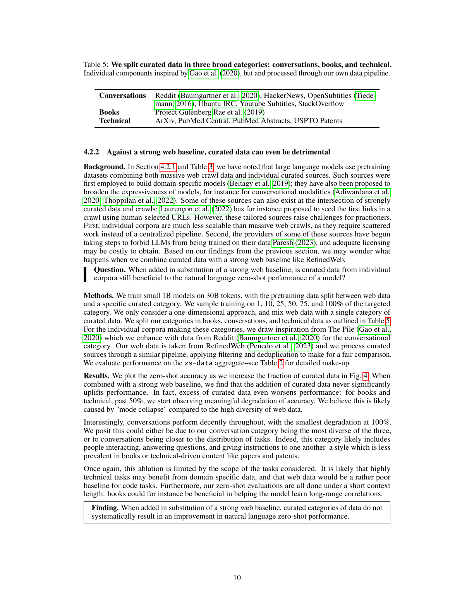
图 4：相较于强网络数据基线，高质量精选数据并未改善零样本性能。 过度依赖单一类型的精选数据甚至会损害性能。图中比较不同数据配比与只使用 RefinedWeb 的基线模型；绿色阴影表示基于十次不同数据划分实验得到的正负三个标准差置信区间。
4.2.3 少量代码和多语言数据不会显著降低英语性能
研究问题。 能否用少量代码和多语言数据替代预训练数据的 5% 至 10%，而不损害模型的英语性能？
多语言。 循环神经网络与 Transformer 最早的大规模部署中，有一部分用于机器翻译 [Wu 等，2016]；注意力机制本身最初也为此类用途引入 [Bahdanau 等，2014]。因此，多语言语言模型很快与单语言模型一同蓬勃发展 [Xue 等，2021]。不过，多语言生成式大型语言模型仍较难实现。Lin 等 [2021] 与 Scao 等 [2022b] 都报告，大规模多语言能力会以英语性能为代价，使多语言模型不如单语言版本 [Scao 等，2022a]。
这种所谓的“多语言诅咒”[Conneau 等，2020] 使实践者不敢简单批量加入其他语言。即使明确面向多语言能力的 PaLM [Chowdhery 等，2022]，也只使用 20% 的非英语数据。此外，多语言数据非常稀缺 [Costa-jussà 等，2022]：Common Crawl 中近 60% 文档是英语，排名靠前的语言又偏向欧洲语言。普通话虽然在全球使用人数中排名第二，在 Common Crawl 中却只排第六；印地语在全球排名第三，却甚至没有进入 Common Crawl 前二十 [Eberhard 等，2023]。
我们选择受限的多语言设置：只考虑使用拉丁字母的语言，并聚焦能够通过数据流水线从 Common Crawl 收集到至少 100 亿词元的语言。实验划分见表 6。模型固定使用 10% 多语言数据，各语言按其在 Common Crawl 中的占比加权，并在英语任务上评估。每种数据划分使用专用分词器。
表 6：语言划分。 仅英语集合只含英语；受限集合加入欧洲使用人数最多的德语、西班牙语和法语；欧洲集合进一步加入意大利语、荷兰语、波兰语、葡萄牙语、捷克语、瑞典语、罗马尼亚语、丹麦语、挪威语、加泰罗尼亚语、斯洛文尼亚语和保加利亚语。
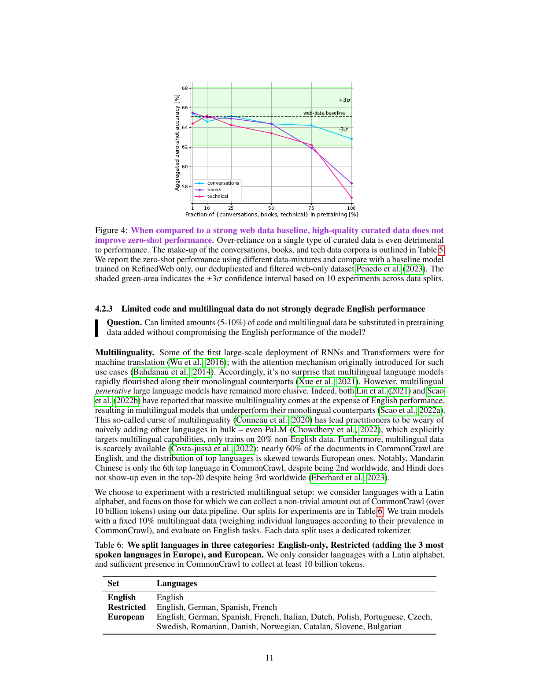
表 7：在预训练数据中加入少量代码或多语言数据，总体不会显著降低性能，只有个别任务例外。 在较大的任务集合上，退化几乎无法测量；在 zs-small 上，下降主要由 HellaSwag 驱动。
结果见表 7。10% 多语言数据造成的性能下降非常有限；在德语、西班牙语、法语之外继续增加其他欧洲语言，也没有造成额外退化。性能下降主要出现在 HellaSwag，其他任务没有受到明显影响。需要注意，实验设置非常受限，未必能代表其他多语言场景，例如不使用拉丁字母的语言，或在英语词元耗尽后使用其他语言补充等情况。
代码。 大型语言模型通过通用预训练后的微调 [Chen 等，2021；Chowdhery 等，2022；Rozière 等，2023] 或专门预训练方案 [Li 等，2023a]，展现出很强的编程能力。与多语言数据不同，代码数据非常丰富 [Kocetkov 等，2022]，从公共代码仓库可以抓取数万亿词元。编程任务又是大型语言模型助手的主要应用 [Luo 等，2023]，因此 Falcon 支持这类用途十分重要。不过，我们不希望语言能力因此受损，所以需要验证预训练中加入少量代码数据的常见做法；常见比例见表 3。
我们从 GitHub 选择排名前 30 的编程语言，用代码替代预训练数据中的 5%。代码数据集也应用去重，但调整启发式规则，以避免删除过多数据。评估只考虑英语任务。表 7 显示，加入代码的影响与多语言数据相似，而且由于比例更低，影响甚至更弱；任务性能几乎没有下降。
发现： 按照大型语言模型的常见配方加入少量代码和多语言数据，即 5% 至 10%，总体不会影响英语任务上的零样本性能。
小规模消融在这里构成更明显的局限，可能使我们在多语言和代码比例上作出偏保守的选择。有研究认为，大模型容量更大，能够更好地处理多语言 [Shaham 等，2022]；代码数据也被证明可以增强大模型的常识能力 [Madaan 等，2022]。更广泛而言，多语言模型中也观察到相似效应 [Aghajanyan 等，2023]。
4.3 架构与预训练：验证流行方案和推理优化
4.3.1 将多查询扩展为多组，以支持张量并行训练和推理
背景。 大型语言模型最初一致采用 Vaswani 等 [2017] 所述的多头注意力方案。每个词元产生 $n_{head}$ 组查询、键和值三元组，再对各个头的结果求和，得到注意力模块的最终输出。不过，这种方案可以改变。Shazeer [2019] 发现，所有注意力头共享相同的键和值，只会造成很小的性能下降。在所谓多查询注意力中，查询头数量仍为 $n_q=n_{head}$，但键和值只有一个头，即 $n_{kv}=1$。
这会显著减少推理内存消耗：在自回归生成期间，系统会缓存键和值以加速生成；与标准注意力相比，多查询注意力把键值缓存大小除以 $n_{head}$，对常见模型可将内存消耗降低 10 至 100 倍，见表 8。多查询注意力提高了大模型推理的可扩展性 [Pope 等，2023]。Chowdhery 等 [2022] 近期普及了这一架构修改，LLaMA-2 [Touvron 等，2023b] 也采用了它。
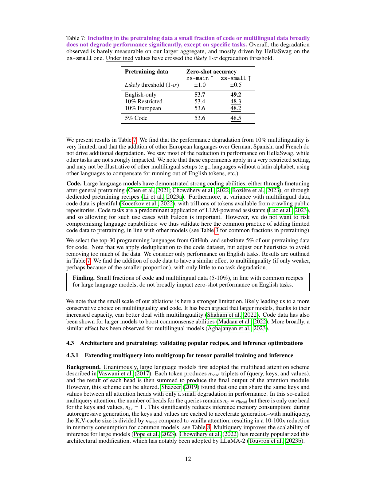
表 8：多查询和多组方案显著减小推理时的键值缓存。 假设 Falcon-7B 的张量并行度为 1，Falcon-40B 与 Falcon-180B 为 8，序列长度为 2048。标准注意力的缓存分别约为 1GB、4GB、10GB；多查询注意力降至约 20MB、30MB、40MB；多组注意力下，40B 与 180B 分别约为 250MB 和 335MB。
规模扩展。 有趣的是，多查询注意力对大模型格外有效。设总参数量为 $N$，模型宽度为 $d_{model}$，层数为 $n_{layer}$，并假设 $d_{head}=d_{model}/n_{head}$ 固定；使用 FlashAttention [Dao 等，2022] 时通常如此。为了高效扩展，建议令 $n_{layer}\sim O(\log N)$ [Levine 等，2020]。由于可近似写成 $N\simeq n_{layer}(d_{model})^2$ [Kaplan 等，2020]，多头注意力的键值缓存大小随 $O(\sqrt{N}\log N)$ 增长。相比之下，多查询注意力每层只存储固定的 $2d_{head}$，不会随宽度增大，因此总体扩展更高效，只按 $O(\log N)$ 增长。
多组注意力。 多查询注意力的一项缺点是，当系统像 GPU 基础设施中常见的做法一样依赖张量并行时，它很难高效并行。可以让每块 GPU 保留共享键和值的副本，分别重复计算，再共享梯度以维持同步；也可以只在一块 GPU 上计算，然后按需通信。我们建议为每个张量并行秩引入独立的键值对，从而简化所需通信。与 Shazeer [2019] 一样，仍保持 $n_q=n_{head}$，但令 $n_{kv}=TP$。该方案只增加固定的张量并行因子，因此不会改变键值缓存的扩展阶。Falcon 系列开发期间，Ainslie 等 [2023] 也提出相同修改；我们把这种注意力称为分组查询注意力或多组注意力。通信量减少不仅发生在推理阶段，也发生在训练阶段。
结果。 我们使用 The Pile [Gao 等，2020] 的 300 亿或 600 亿词元，训练 10 亿和 30 亿参数模型，并采用多查询或不同程度的多组注意力。需要强调的是，我们没有补偿减少额外键和值造成的参数量下降，因此预计会出现一定退化。表 9 显示，即使不补偿可训练参数减少，多查询与多组注意力也没有造成明显的零样本性能下降。
方案决策： 为改善最大模型的性能可扩展性，Falcon 全系列采用 $KV=TP$ 的多组注意力；Falcon-7B、40B、180B 的键值头数分别为 1、8、8。
表 9：即使不控制参数量减少，多查询注意力的零样本性能代价也很有限。 困惑度影响更容易直接测量，零样本性能影响则不太一致；$KV=8$ 的多组注意力始终接近标准基线。
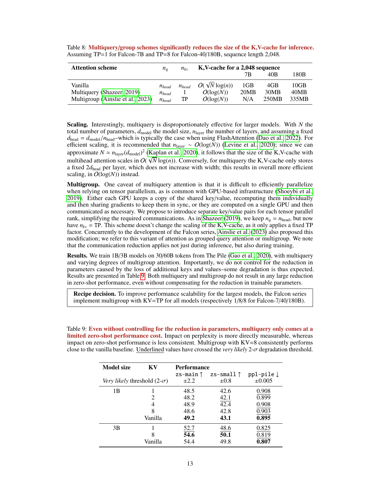
表 10：在小规模下，URPE 和 RoPE 可能优于 ALiBi，但规模增大后优势不再清晰。 对 10 亿参数模型，三个任务集合中有两个显示 ALiBi 可能弱于旋转位置嵌入；到 30 亿参数规模，两者性能更接近。
4.3.2 旋转位置嵌入相对 ALiBi 的优势可能有限
背景。 默认情况下，注意力不会向模型提供位置信息，只会把序列看成词袋。因此，原始 Transformer 架构使用绝对正弦嵌入编码位置 [Vaswani 等，2017]。此后，绝对嵌入的流行程度下降，社区转向相对位置嵌入。虽然这一变化有充分的经验依据 [Shaw 等，2018；Scao 等，2022b]，实践者仍未统一采用某一种相对位置嵌入：BLOOM 与 MPT [Scao 等，2022a；MosaicML，2023] 使用 ALiBi [Press 等，2022]，GPT-J、PaLM 与 LLaMA [Wang 与 Komatsuzaki，2021；Chowdhery 等，2022；Touvron 等，2023a、2023b] 使用旋转位置嵌入 RoPE [Su 等，2021]。
上述工作经常认为 RoPE 可以取得更好的上游性能，而 ALiBi 的优势是内建外推能力。最近还有一种通用相对位置嵌入 URPE [Luo 等，2022]，用于弥补典型相对位置嵌入表达能力的不足。值得一提的是，因果模型的自回归掩码本身也会向模型提供一定的位置信息 [Scao 等，2022b；Haviv 等，2022]，使完全不使用位置嵌入的训练也能在零样本性能上与绝对正弦嵌入相比。与本工作同期，人们还提出让 RoPE 实现零样本或微调后长度外推的方法 [Chen 等，2023]，缩小了它与 ALiBi 在外推能力上的差距。
结果。 我们在 The Pile 的 300 亿或 600 亿词元上训练 10 亿和 30 亿参数模型，结果见表 10。没有证据表明 URPE 优于 RoPE；而且要使 URPE 达到可接受性能，需要大幅修改融合注意力内核，所以我们没有继续研究。10 亿参数规模下，RoPE 相较 ALiBi 很可能有优势；到 30 亿参数规模，这一优势缩小，不足以得出明确结论。ALiBi 仍有一项优势：计算开销显著低于 RoPE。不过，使用第 5.3.2 节的定制 Triton 内核后，我们可以缓解 RoPE 的开销。
方案决策： 与其他流行的大规模模型保持一致，采用旋转位置嵌入，并用定制内核缓解计算开销。
4.3.3 对成本高效训练而言，GLU 的额外内存成本可能不值得
背景。 人们普遍认为，基于门控线性单元的激活 [Shazeer，2020] 优于 GeLU 等传统激活函数 [Scao 等，2022b]；PaLM 与 LLaMA 等模型都采用了它 [Chowdhery 等，2022；Touvron 等，2023a、2023b]。
规模扩展。 从扩展角度看，GLU 激活也颇受青睐，因为它扩大多层感知机，把第一层加倍，使更多计算转移到简单矩阵乘法。不过，这需要付出代价：存储多层感知机中间激活所需的内存更高。通常，激活函数的输入会被保存以供反向传播使用，因为重新计算激活函数本身的成本可以忽略。对于门控单元，这个输入现在扩大一倍。总体而言，SwiGLU 会使中间激活加倍，并让多层感知机参数量增加 50%；因此，多层感知机每个参数对应的激活内存增加 33%。
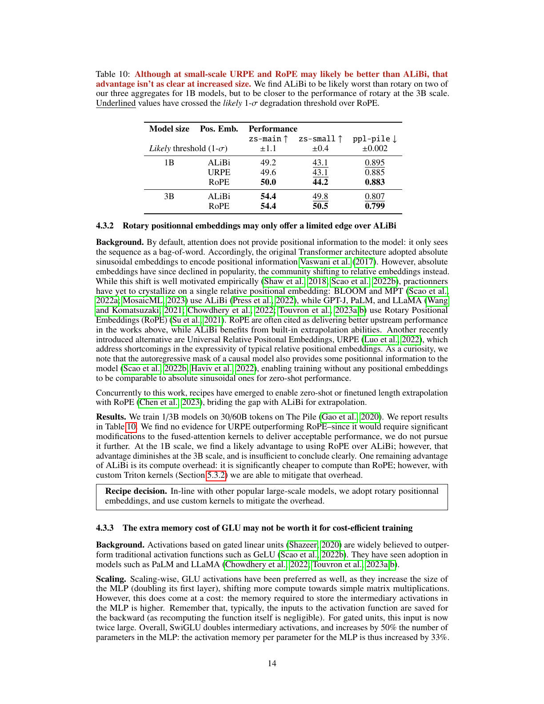
表 11：GLU、z-loss、去除偏置等小型架构调整不太可能改善零样本性能。 不过，有些方案被认为可以改善可扩展性或稳定性，因此仍可能值得采用。
结果。 表 11 报告 10 亿参数模型在 The Pile 的 300 亿词元上训练的结果。我们没有发现 SwiGLU 在零样本性能上带来明确收益；困惑度改善也刚好达到“不太可能只是评估方差”的阈值。一个可能原因是 SwiGLU 需要专门调节超参数，而与其他架构消融一样，我们直接采用了 GPT-3 [Brown 等，2020] 的设置。由于已经使用并行注意力和多层感知机层，我们也没有从 SwiGLU 看到多少额外吞吐量收益。Falcon 系列为优化成本而使用 40GB A100 训练，我们从一开始就很关心内存消耗；因此，SwiGLU 内存需求更高而性能与 GeLU 相近，对我们很可能弊大于利。
方案决策： 考虑到 40GB A100 训练的内存占用，而且零样本性能没有明确提升，不采用 SwiGLU。
4.3.4 小调整有助于可扩展性：并行层与线性层无偏置
并行注意力和多层感知机块。 Wang 与 Komatsuzaki [2021] 在训练 GPT-J 时首次引入并行注意力和多层感知机层。这项改动对降低张量并行通信成本很重要：一个简单修改就把每层需要的 all_reduce 次数从两次减到一次。与 Chowdhery 等 [2022] 一致，我们没有观察到零样本性能或困惑度发生可测量的退化，因此采用这项实践。示意见图 5。
去除偏置。 Chowdhery 等 [2022] 发现，去除线性层与层归一化中的偏置可以提高稳定性。我们验证了去除线性层偏置不会降低性能，结果见表 11：无论语言建模损失还是最终零样本性能都没有恶化。因此，Falcon 系列去除了线性层偏置。
方案决策： 采用并行注意力和多层感知机，并去除线性层偏置。
4.3.5 验证超参数最佳实践：z-loss、权重衰减与学习率搜索
z-loss。 z-loss 最早在 mesh-tensorflow 代码库中引入 [Shazeer 等，2018]，它通过鼓励逻辑值保持接近零来提高训练稳定性。可以把它实现为辅助损失：$z\_loss=10^{-4}\log^2(\sum_i e^{z_i})$，其中 $z_i$ 是模型输出逻辑值。需要注意，在小规模下，z-loss 不会显著影响任务性能，见表 11。
方案决策： 采用 z-loss，因为已有工作认为它能提高大规模训练稳定性，消融又显示它不影响零样本性能。
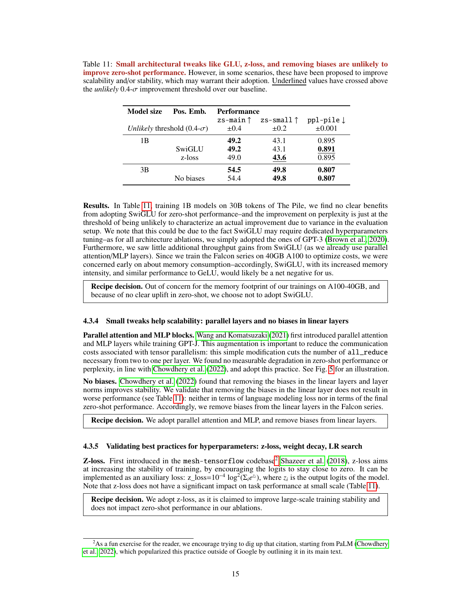
图 5：并行化注意力和多层感知机块，可以在张量并行训练期间去掉一个同步点。 这一结构由 Wang 与 Komatsuzaki [2021] 首次为 GPT-J 提出。
权重衰减。 我们尝试复现 Chowdhery 等 [2022] 的权重衰减调度，但没有获得改善，推测原因是初始化方式不同。我们发现，权重衰减对未充分去重或质量较低的数据集影响格外明显，见表 12。权重衰减通过 AdamW 实现 [Loshchilov 与 Hutter，2018]。
方案决策： 所有 Falcon 模型均使用固定为 0.1 的 AdamW 权重衰减。
最优学习率。 设置一次训练的学习率有多种实践，从简单网格搜索到更符合原则的方法 [Yang 等，2022；Dinan 等，2023]。第 4.4 节会进一步讨论复现后者时遇到的失败；这里聚焦简单方法及其验证。广义而言，学习率过高会带来训练发散和不稳定风险；学习率过低则会损失上游和下游性能，导致训练效率不佳。
我们按以下方式搜索候选学习率：第一，以 GPT-3 [Brown 等，2020] 使用的数值为中心，选择 4 至 6 个大致按对数间隔的候选项，并偏向较高学习率；第二，对所有候选学习率执行长达 5 亿词元的预热；第三，选择此时损失最低的学习率，并丢弃已经造成尖峰的候选项。
我们在小规模下测试该方法，为 10 亿参数模型选择七个学习率，再比较预热结束时的排名和实际训练结束时的最终排名。结果见表 13。这个简单方法成功根据预热结束时的排名找出最佳学习率。总体而言，预热结束和训练结束时的排名相对稳定，只有第二名与第三名互换。
方案决策： 在候选学习率中，选择预热结束时损失最低的一项。
表 12：权重衰减很可能改善性能，对 The Pile 等可能未充分去重的数据集尤其明显。 出人意料的是，其效果会随底层数据集发生很大变化。
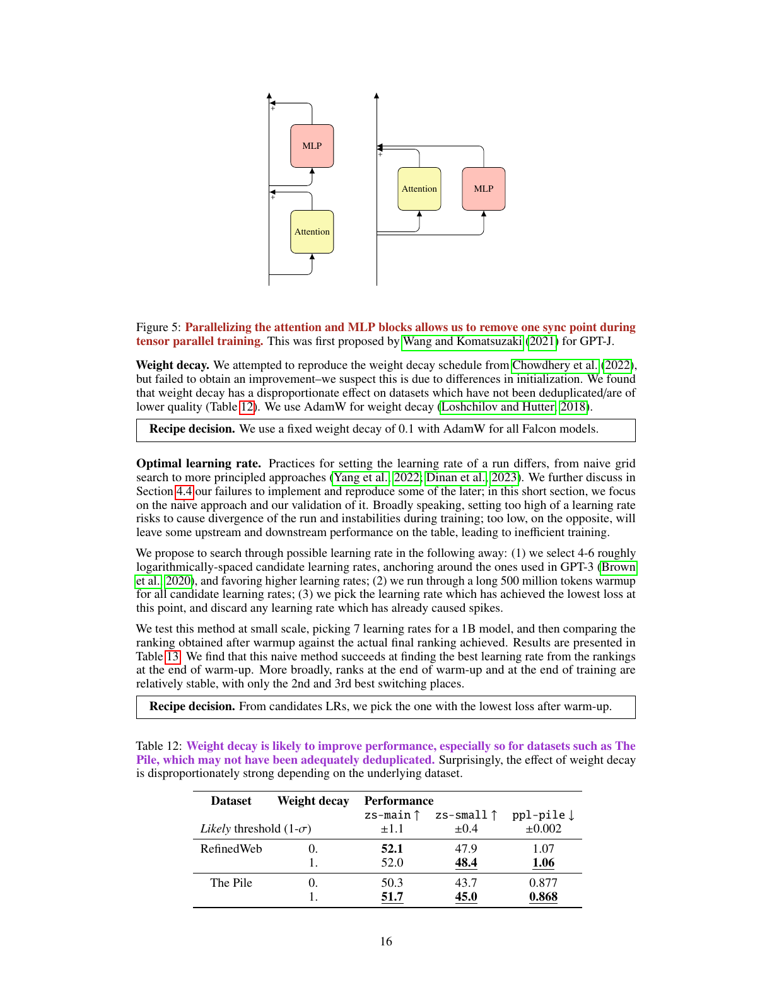
表 13：学习率预热结束时的损失排名基本反映训练结束时的排名。 因此，可以用这个简单、资源消耗较小的启发式方法高效搜索大规模训练的最优学习率。
4.4 仍需进一步实验：未被采用的候选方案
本节简要介绍我们尝试过、但无法复现结果或获得有意义结论的实践和想法。需要强调，这不应被视为对这些实践的否定；其中许多已经成功用于流行模型。
替代训练目标。 最大型语言模型通常使用纯因果解码器架构与目标训练 [Brown 等，2020；Rae 等，2021；Chowdhery 等，2022]。Wang 等 [2022a] 发现，这类模型的零样本能力强于 T5 等带掩码编码器-解码器 [Raffel 等，2019]；不过，多任务微调 [Sanh 等，2021] 后，带掩码编码器-解码器表现更好，说明不同制度和使用场景可能偏好不同架构与目标。在这些比较中，非因果纯解码器，即前缀语言模型，始终是有竞争力的第二名。Tay 等 [2022a] 提出的 UL2 则通过在多个目标的混合上训练来统一这些范式。
我们尝试了 UL2；即使在适用时把任务改写成不同范式，也没有获得零样本性能提升。由于时间和资源有限，我们没有继续深入，因为 Tay 等 [2022b] 已经表明，训练后再适配 UL2 目标不仅可行，而且高效。
对于代码模型，中间填充训练 FIM [Bavarian 等，2022] 很流行，因为它对应此类模型的常见使用场景。研究认为 FIM 对自回归建模能力几乎没有代价；我们基本确认这一结果，只有少数任务在中等填充率 0.25 至 0.5 时很可能退化，较低和较高填充率对零样本性能影响最小。不过，由于当时采用并不广泛，我们跳过 FIM，考虑将其留作 Falcon-Coder 的适配步骤；Code LLaMA [Rozière 等，2023] 同期证明了这种路线。
符合原则的超参数。 我们尝试使用 $\mu$-参数化 [Yang 等，2022]，以符合原则的方式把超参数从小规模运行扩展到大规模运行，但未能证明它优于简单的超参数估计策略。
替代优化器。 Amos [Tian 与 Parikh，2022] 是一种带自适应学习率和权重衰减的 Adam 替代方案，在 BERT 和 T5 上报告了很强结果。受此鼓舞，我们进行了实验，但即使在小规模下，也无法使它改善纯因果解码器模型。
对话挖掘。 开发 RefinedWeb 时，我们尝试从网络中挖掘特定类型数据。训练基于 BERT 的专用分类器经常过拟合，因此转而使用简单启发式方法，例如根据转折词密度识别论证，根据用户轮次识别对话。这些数据带来显著的零样本性能提升，但数量非常少。模型训练在完整处理 Common Crawl 之前就已开始，无法有效找出全部这类数据并优先使用，因此把这个想法留给未来模型。
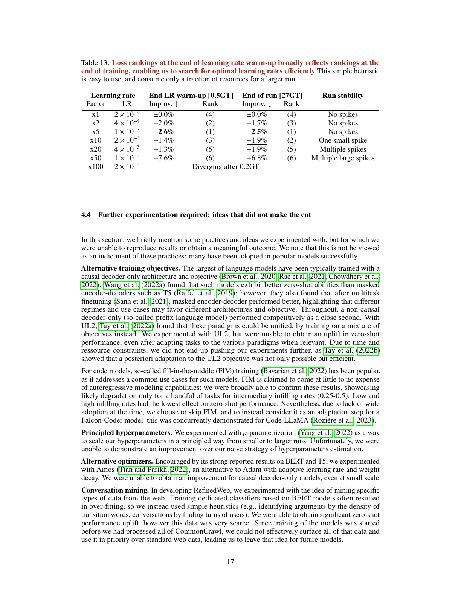
4.5 总结：验证整体数据集与架构方案
完整 Falcon 方案概览见后文实现部分。现在，我们使用更长训练和最先进模型比较，在更大规模上验证该方案的性能。验证分为两部分：第一，预训练数据集，尤其是网络组成；第二，在 The Pile 上训练采用 Falcon 架构的模型。
数据集验证。 我们分别用 270 亿和 3500 亿词元训练 10 亿、70 亿参数模型，以复现此前模型的常见做法。基线架构以 GPT-3 [Brown 等，2020] 为基础，并使用 ALiBi [Press 等，2022]。训练数据包括 The Pile [Gao 等，2020]、我们的网络数据集 RefinedWeb [Penedo 等，2023]，以及不提高任何来源采样比例、把 RefinedWeb 与精选来源结合的 Falcon 数据混合。最后一种混合为 Falcon-180B 设计，目标总量为 3.5 万亿词元，细节见第 5.1 节。
表 14 显示，Falcon 数据混合显著改善性能；其中绝大部分提升仅靠 RefinedWeb 就能获得，无需精选数据。这再次证明，只要经过适当过滤和去重，网络数据本身就能训练高性能模型。我们的 10 亿和 70 亿参数模型与其他最先进模型相比表现良好，但由于训练时间略长，设置对它们有小幅优势。
架构验证。 我们沿用数据集验证设置，在 The Pile 的 270 亿和 3500 亿词元上训练 10 亿参数模型。该实验不包含超参数调整：所有模型都使用权重衰减，并采用 Brown 等 [2020] 的相同学习率，因此只比较架构本身。
表 14 显示，Falcon 架构带来小幅性能退化；我们主要把它归因于多查询注意力减少了参数，而实验没有控制这一点。扩大多查询模型可能会缩小差距。不过，一个值得注意的事实是：数据改进对性能影响非常显著，架构改进则主要用于提高训练和推理可扩展性，并不会提升任务性能。
表 14：Falcon 数据方案显著优于 The Pile 和其他最先进模型。 数据方案主要建立在 RefinedWeb [Penedo 等，2023] 上。由于多查询注意力减少参数量，而实验没有控制这个因素，Falcon 架构出现小幅零样本性能下降。控制参数量后，架构可能与基线持平或更好。总体而言，架构改进主要提高推理与训练的硬件可扩展性，数据方案改进则显著提升下游性能。
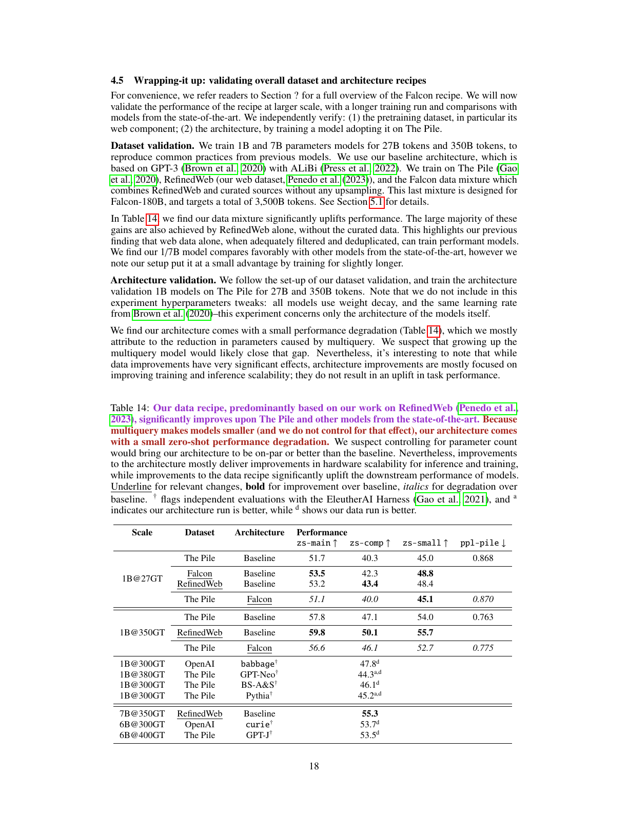
5 实现
根据第 4 节消融实验的发现，以及文献中的进一步测试和最佳实践，本节说明训练 Falcon 系列所用的代码库与方法。
5.1 Falcon 数据集：以网络数据为主，辅以精选与对话数据
根据 30000 至 50000 PF-days 的计算预算估计，我们把预训练数据集目标设在 3 万亿至 5 万亿词元之间，并以 Hoffmann 等 [2022] 的结论作为模型规模上限和预训练长度下限。这是 Chinchilla 数据集规模的两倍以上，也是 GPT-3 的十倍；不过，LLaMA-2、OLMo 等同期模型也开始使用这一规模的数据 [Touvron 等，2023b；Soldaini 等，2023]。考虑到重复数据会造成记忆与退化 [Carlini 等，2022；Hernandez 等，2022]，我们选择不提高任何数据来源的采样比例。
高层概览。 第 4.2.1 节表明，经过充分过滤和去重的网络数据可以训练高性能模型，因此我们专注扩大网络数据，以达到所需规模。数据质量改善会显著转化为下游性能改善，而数据处理成本又远低于模型训练，所以我们并不过分追求数据处理成本最优。很可能存在一种成本低 90%、相对性能下降不到 10% 的方案，但这不是我们的目标。
我们仍然加入少量精选数据，来源受 The Pile [Gao 等，2020] 启发，并补充 Reddit 对话 [Baumgartner 等，2020]。只要经过适当处理，这些数据不太可能降低性能，见第 4.2.2 节，而且可能扩展模型的下游适用范围。不过，由于不允许提高采样比例，这些来源注定只是少数，最终占数据集的 13%。
对于代码和多语言数据，我们采取保守策略。根据第 4.2.3 节结果，加入 8% 多语言数据和 3% 代码。实际比例低于实验比例，原因是可用数据库存受限；尤其对于代码，流水线后续改进大幅提高了可用量，但模型当时已经开始训练，因此没有再调整混合比例。
最终 Falcon 混合见表 15。它按 3.5 万亿词元的预训练数据集设计，不允许对精选来源提高采样比例。尽管三个模型训练长度不同，Falcon-7B、40B、180B 使用相同的百分比配比。
表 15：最终 Falcon 数据混合以网络数据为主，比例接近 85%，但也包含不提高采样比例的精选语料，以扩展模型表达能力。 RefinedWeb 英文和欧洲多语言数据分别占 76% 与 8%，图书占 6%，对话占 5%，代码占 3%，技术数据占 2%。单独精选语料受 The Pile 启发，但全部从零重建，以保证质量并兼容数据流水线。Falcon 使用的代码来自采用宽松许可证的 GitHub 仓库。
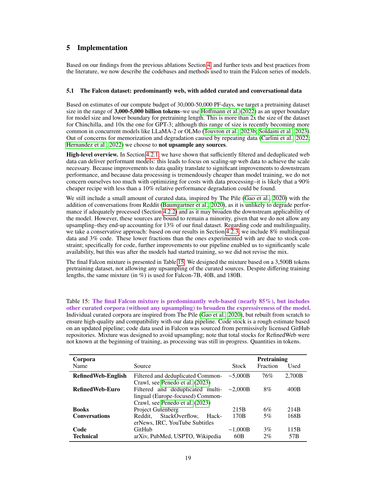
5.1.1 Macrodata Refinement 流水线与 RefinedWeb 数据集
网络数据处理流水线已在 RefinedWeb 专文 [Penedo 等，2023] 中详细说明，本节只突出关键组件和决策。要扩大预训练数据，可以采用两种方法：
- 重复数据。 这是最简单的选择，早期计算机视觉通常如此。不过，大多数大型语言模型保守得多，通常只把特定语料提高采样 2 至 6 倍，见表 3。主要顾虑是记忆 [Carlini 等，2022]，以及重复数据会不成比例地降低模型质量 [Lee 等，2022；Hernandez 等，2022]。Muennighoff 等 [2023] 近期认为，相同数据重复最多四轮可能尚可，继续重复则会造成退化，因此我们放弃这条路线。
- 扩大网络数据处理。 扩大精选来源既繁琐又需要大量人工，而网络数据来源庞大且丰富。网络数据改进具有很高杠杆，因为它会一次影响大量词元。Common Crawl 等公开抓取可能包含 50 万亿至 100 万亿以上词元，即使拒绝其中 90%，仍会得到万亿规模数据集。然而，原始网络数据质量极差 [Trinh 与 Le，2018；Kreutzer 等，2022]，含有大量不需要的成人内容和机器生成垃圾信息。我们因此选择通过大规模过滤与去重来改善网络数据质量。
两种方法相互独立但并不冲突。未来要扩展到预训练数据达到 10 万亿至 100 万亿词元的前沿模型，可能需要把大规模网络数据集重复少量轮次。
设计理念。 RefinedWeb 与以往网络数据集有以下区别：
- 极大规模。 Macrodata Refinement 流水线强调可扩展性，最多使用 20000 个 CPU 核心生成 RefinedWeb。RefinedWeb 含有近 5 万亿个去重词元，是当时有记录以来最大的预训练数据集；它支持训练过去认为不可能在不重复多轮数据的情况下训练的大模型。
- 严格去重和过滤。 受 Lee 等 [2022] 启发，RefinedWeb 完全去重。先使用 MinHash 模糊去重大幅缩小数据集，再进行精确子串去重。流水线还先用过滤启发式规则减少文本提取伪影并去除机器生成内容。第 4.2.1 节表明，这能使网络数据达到精选语料的性能。
- 中性过滤。 除语言识别外，Macrodata Refinement 流水线不依赖机器学习过滤策略，因为这类过滤器很容易向数据中引入或放大偏见 [Dodge 等，2021；Welbl 等，2021]。
图 6：Macrodata Refinement 的连续阶段会移除 Common Crawl 原始文档中的近 90%。 过滤和去重各自使数据量约减半：约 50% 文档因为不是英语被丢弃，剩余文档中 24% 因质量不足被删除，另有 12% 因重复被移除。图中灰色表示相对于前一阶段的删除率，阴影表示总体保留率。图源自 Penedo 等 [2023]。
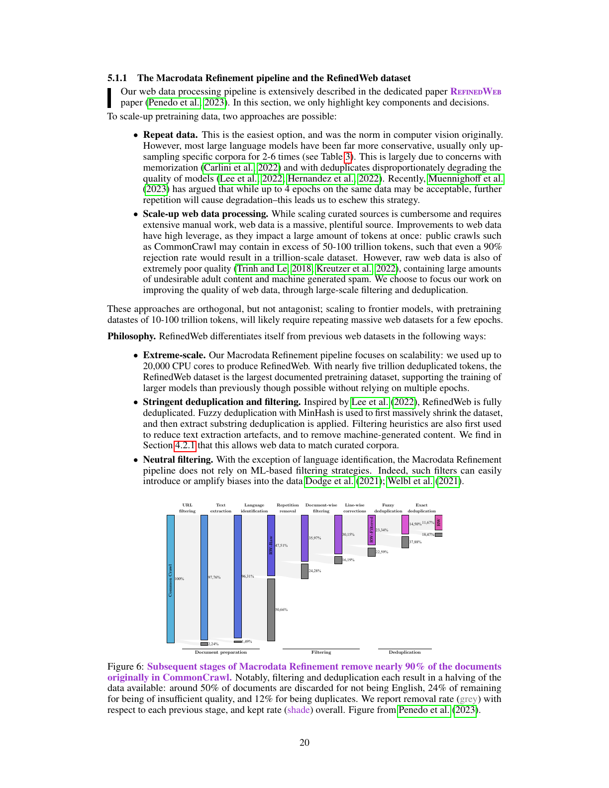
流水线概览。 Macrodata Refinement 分为三个连续阶段，详细删除率见图 6：文档准备、过滤、去重。
在文档准备阶段，执行任何计算密集型处理之前，先仅根据网址过滤文档，使用成人网站黑名单并按网址名称评分。我们发现 Common Crawl 提供的预处理 .WET 文件仍含有导航菜单等不需要的内容，因此改为使用 trafilatura 处理原始 .WARC 文件中的 HTML 响应，提取自然文本。最后，使用 CCNet [Wenzek 等，2020] 的 fastText 分类器识别文档主要语言。对于英语，约 48% 文档保留下来。
在过滤阶段，我们使用多种启发式规则去除重复文本，以及长度、符号与词语之比等指标异常的文档。重复文本可能是抓取或文本提取造成的伪影，这些启发式规则受 Rae 等 [2021] 启发。我们还引入所谓逐行修正，去除点赞计数器、导航按钮等残留伪影。适用数据量再次减半，最终约保留 Common Crawl 的 23%。
最后，大规模去重分两步进行：先使用 MinHash [Broder，1997] 删除文档级近似重复，再使用后缀数组 [Manber 与 Myers，1993] 删除精确匹配的子串。采用 Lee 等 [2022] 的去重设置后，可用数据再次减半，最终只剩 Common Crawl 总数据的约 12%。
5.1.2 Microdata 精选语料与对话掩码
第 4.2.2 节发现，在 RefinedWeb 这样的强网络基线之上加入对话、图书或技术来源的精选数据，不会进一步改善性能。不过，我们认为这类数据和代码能够扩展模型表达能力，以及它对评估设置未覆盖的不同下游任务的适用性。因此，我们仍加入少量精选数据，单独来源受 Gao 等 [2020] 启发。我们还加入 Reddit 数据 [Baumgartner 等，2020]，并为高效格式化树状对话引入一种新的注意力掩码策略。
Microdata 精选语料还会经过 Macrodata Refinement 流水线，但过滤设置经过调整，例如为图书调节文档长度阈值；各个语料也分别去重。
来自 The Pile 的组成部分。 除存在显著质量或许可证问题的来源外，我们复用了 The Pile [Gao 等，2020] 的单独组成部分。所有组成部分都从零重新实现，以确保格式匹配数据流水线。我们引入若干特殊词元，复现精选语料中的结构化信息并更好地控制生成，包括“标题”“摘要”“引言”和“评论”。如果能够获得 LaTeX 文件，就采用类似 Lewkowycz 等 [2022] 的方法将其转换为 Markdown。Macrodata Refinement 启发式规则根据每种语料人工调节，并人工分析被拒绝和接受的样本；对图书还增加新规则，删除索引、免责声明和目录等无关内容。
对话数据。 大型语言模型越来越多地用于聊天场景，用户和模型来回互动 [Adiwardana 等，2020；Zheng 等，2023]。虽然模型会在下游适配这种用途，我们仍着重用对话数据增强预训练，尤其加入 Reddit 数据 [Baumgartner 等，2020]。
对话树与注意力掩码。 Reddit、HackerNews 等在线论坛的数据以树状组织，用户对话轮次会分叉。过去的模型从这些树中采样轨迹 [Thoppilan 等，2022；Chowdhery 等，2022]，但这会导致数据重复，或遗漏部分轨迹。我们发现，可以用注意力掩码编码树结构，让后续评论只关注自己轨迹中的评论，并忽略旁支评论。
对话按深度优先顺序序列化；如果其他评论与当前评论无关，即位于不同分支或层级更深，就会被掩蔽。位置嵌入使用树深度，它可以自然地序列化对话。附录 F.2 用伪代码说明如何把深度优先位置转换为注意力掩码。我们还用这项策略把不同文档相互掩蔽，而不是只依赖文档结束词元。初步实验没有发现它改善零样本性能。
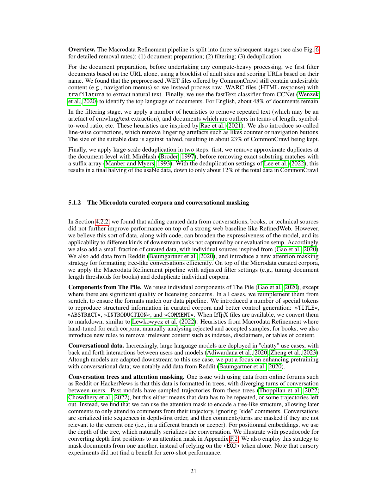
图 7：树状注意力掩码让模型无需采样或重复数据，就能利用全部对话轨迹。 对话树以深度优先方式序列化，词元位置是其在树中的深度，因此可以同时训练树中所有对话，又不用重复早期轮次。例如，粉色的“是的！它很可爱”可以看到绿色的“你喜欢巴黎吗”，并对自身使用因果注意力，但看不到其他分支中的话语。
5.2 Falcon 架构与高效推理、稳定训练方案
Falcon 架构的目标是在尽量降低下游性能影响与模型风险的同时，最大化训练和推理效率。第 4.3 节通过消融形成了以下决策：
- 架构。 使用多组注意力，即多查询注意力 [Shazeer，2019] 的扩展，以提高推理可扩展性；使用旋转位置嵌入 [Su 等，2021]；由于 GLU [Shazeer，2020] 增加内存占用，不使用 GLU，而采用标准 GeLU；使用并行注意力与多层感知机块 [Wang 与 Komatsuzaki，2021]；去除线性层偏置 [Chowdhery 等，2022]。
- 超参数。 使用 z-loss 帮助提高稳定性 [Shazeer 等，2018]；使用固定 0.1 权重衰减；预热期间进行对数网格学习率搜索，选择预热结束时损失最低的学习率。
5.2.1 架构细节：独立层归一化、绑定嵌入与规模扩展
层归一化。 使用并行注意力时，可以为多层感知机与注意力块分别设置层归一化，更接近标准 Transformer；也可以为两者使用统一层归一化。由于层归一化输入的梯度计算是线性的，使用两个层归一化仍能维持并行注意力与多层感知机的低通信量。训练结束后，还可以把层归一化的权重与偏置乘入后续线性层，从而把两个归一化重新合并成一个。
因此，我们选择贴近标准架构，使用两个独立层归一化。不过，这会给后续转换到其他流行格式增加不必要的复杂性。对较晚训练的 Falcon-7B，我们改用单个层归一化。
绑定嵌入。 绑定嵌入是 Transformer 模型中的普遍实践：把词元 $x$ 转换为 $z_0=xW$ 的嵌入权重，也用于把嵌入转换回预测逻辑值 $p=z_nW^T$。虽然 GPT-3、PaLM、LLaMA 等近期大型语言模型仍然使用它 [Brown 等，2020；Chowdhery 等，2022；Touvron 等，2023a]，最初的动机 [Press 与 Wolf，2016；Inan 等，2016] 可能已经不完全适用。当时共享权重用于减小模型，而对超过 1000 亿参数的模型，嵌入只占很小比例。此外，权重共享需要额外通信，会给分布式训练带来挑战。语义层面的理由仍然成立，但 10 亿参数规模的初步实验没有显示明显影响。为了不额外增加 Falcon 系列训练风险，我们最终仍保留绑定嵌入。
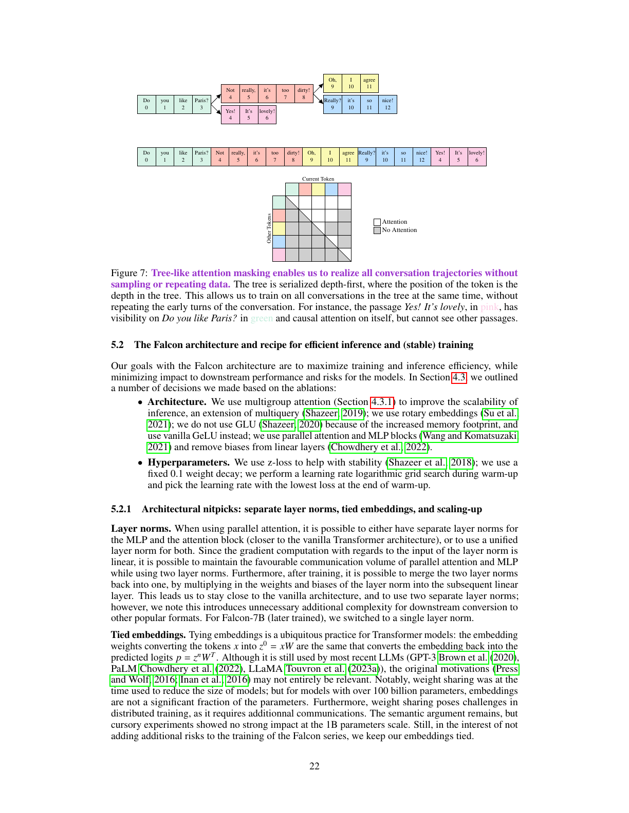
表 16：Falcon 模型形状、超参数与分布式策略摘要。 Falcon-7B 在 40B 和 180B 之后训练，实验性地采用更大批量。三个模型层数分别为 32、60、80，模型宽度分别为 4544、8192、14848；注意力头维度统一为 64，上下文长度统一为 2048。训练数据分别为 1.5 万亿、1 万亿和 3.5 万亿词元。
词表大小。 语言模型词表规模差异很大，从 256 项的字符级模型 [Xue 等，2022] 到数百万项的大规模多语言模型 [Liang 等，2023]。生成模型的实践大致集中为两类：单语言模型常用 3 万至 6 万词表 [Brown 等，2020；Rae 等，2021；Touvron 等，2023a]，更偏多语言的模型则使用超过 10 万词表 [Scao 等，2022a；Chowdhery 等，2022]。
更大词表可能具有更好的分词效率，因此按文本字节计算推理更快，但也有缺点：从可扩展性看，可能造成流水线阶段负载不均，并需要更多存储；模型是否能最优利用大词表也不明确 [Lieber 等，2021]。我们的分词器使用 65024 词表，并以 16 位无符号整数存储词表信息；还剩约 500 个额外取值，可用于后续适配，例如 UL2 的范式词元 [Tay 等，2022b]。
模型规模扩展。 Falcon 模型形状和超参数见表 16。计算预算增加时，资源既可用于扩大模型，即增加参数量，也可用于延长训练，即增加词元量。Hoffmann 等 [2022] 建议两者等比例增加，以实现计算最优扩展。不过，这项结论需要考虑两点：第一，增加参数量也会增加下游推理成本，模型广泛部署时成本可能很高；第二，如果数据受限，扩大模型可能是一种用计算换取下游性能的方式。对于 Falcon，我们把 Hoffmann 等 [2022] 的结论作为预训练长度下限和模型大小上限。
除模型总规模外，还需要决定参数形状：例如应分配给更深还是更浅的模型，应扩大注意力头宽度还是增加头数。Scao 等 [2022b] 的简短回顾指出，模型深度通常只随总参数量按对数增长 [Levine 等，2020]，而注意力头大小的实践差异较大。我们大体遵循对数深度扩展建议，并固定注意力头大小为 64，以优化 FlashAttention [Dao 等，2022] 的性能。多组注意力的键值头数固定为训练时张量并行度，序列长度固定为 2048。这个上下文长度可以通过训练后适配高效增加 [Chen 等，2023]。
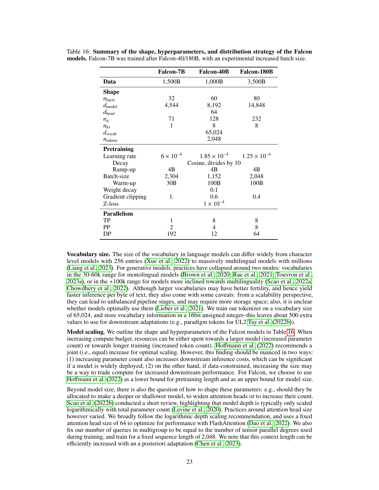
5.2.2 大型语言模型炼金术：预训练超参数
预训练使用的超参数见表 16，下面强调若干决策。
学习率搜索。 第 4.3.5 节所述流程为 Falcon-7B、40B、180B 分别得到 $6\times10^{-4}$、$1.85\times10^{-4}$ 和 $1.15\times10^{-4}$ 的学习率。它们明显高于既有模型报告的数值，但训练运行仍然基本稳定。回头来看，我们认为搜索流程可能会得到比最优值更高的学习率；这是可以接受的取舍，因为从训练尖峰中恢复相对容易，见第 5.4 节。
学习率预热。 所有模型都使用覆盖 40 亿词元的长预热阶段。
批大小预热。 不同底层硬件上的批大小预热实践差异很大。使用 GPU 训练的 GPT-3 [Brown 等，2020]、BLOOM [Scao 等，2022a]、MT-NLG [Smith 等，2022] 通常在 100 亿至 200 亿词元内进行细粒度预热；使用 TPU 训练的 Gopher [Rae 等，2021]、Chinchilla [Hoffmann 等，2022]、PaLM [Chowdhery 等，2022] 往往在训练中途把批大小加倍，或在完成 25% 和 50% 训练时大幅增加批量。部分近期模型甚至完全跳过批大小预热 [Zhang 等，2022；Touvron 等，2023a、2023b]。
在小规模实验中，更长预热从未损害下游性能，通常还会得到更好的模型。因此，我们采用覆盖 1000 亿词元的长预热策略。训练期间可以扩大数据并行度和集群总体规模，所以这只造成有限吞吐量代价。Falcon-7B 受实际时间限制，只使用覆盖 300 亿词元的加速调度。
梯度裁剪。 Falcon-40B 的梯度裁剪阈值设为 0.6。Falcon-180B 最初同样使用 0.6，后来为提高训练稳定性降至 0.4。两种情况下，阈值都经过调节，只影响异常事件，而不会影响绝大多数训练步。Falcon-7B 的阈值为 1；我们发现这一规模的训练本来就不太容易出现不稳定，即使采用了很大的批量也是如此。
优化器。 使用 AdamW [Loshchilov 与 Hutter，2017]，它是最常用的优化器，已经反复证明在一般场景和大型语言模型训练中表现良好。为提高训练性能，我们使用 Megatron [Shoeybi 等，2019] 的融合优化器内核。不过，对大规模训练而言，优化器融合内核没有那么重要，使用优化器分片时尤其如此。
不使用丢弃。 大型语言模型通常只在相对不重复的数据上训练一轮，因此一般不使用丢弃 [Srivastava 等，2014]。随着未来模型需要数十万亿词元，数据短缺和近期认为少数几个训练轮次可以接受的论文 [Xue 等，2023] 无疑会挑战这项实践；但 Falcon 系列没有使用丢弃。
5.3 使用 Gigatron 在云基础设施上进行大规模分布式训练
为了提高成本效率，我们没有使用昂贵的专用高性能计算资源，而选择在云基础设施上训练 Falcon。Falcon 系列在 AWS 的 p4d 集群上训练，Falcon-180B 最多使用 4096 块 A100。训练基础设施的关键指标包括：
- 每节点 8 块 40GB A100。 部分受功耗或粒度限制的数据中心流行每节点 4 块 40GB 或 80GB A100，但我们发现这种配置吞吐量较低，因为可用张量并行度从 8 降为 4。40GB A100 则具有更高可用性和成本效率。
- 每块 GPU 50Gbps 互连。 最先进基础设施通常通过低延迟 InfiniBand 为每块 A100 提供 200Gbps 互连，但这类配置可能极其昂贵。对最大达到 Falcon-180B 的模型，带宽对总体吞吐量影响有限，主要与数据并行维度上的
all_reduce大小有关。相反，p4d 上 EFA 较高的延迟是流水线通信主要瓶颈，对小模型尤其明显。 - 没有分布式文件系统。 数据直接从 S3 流式读取，不依赖专用文件系统。分布式文件系统昂贵且难以维护，大型语言模型训练的数据输入输出量又很小，不足以证明使用它是合理的。
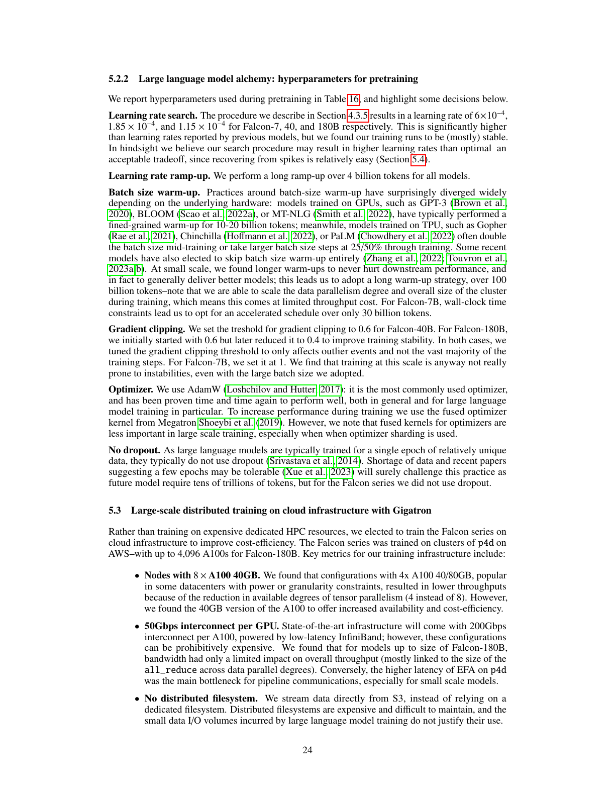
我们的基础设施介于真正的高性能计算系统与灵活云环境之间。特别是，我们发现 GPU 仍必须共享数据中心中的单个主干网络，因为多主干配置并不可靠。它成本更低，但也要求我们留意其限制。流行且简单的完全分片数据并行训练方案 [Rajbhandari 等，2020] 无法在这种基础设施上良好扩展；我们需要三维并行 [Narayanan 等，2021b] 的精细控制，才能获得最优性能。
由于当时开源框架存在局限，我们决定构建专有分布式训练框架 Gigatron。它基于 PyTorch，核心实现三维分布式并行策略 [Shoeybi 等，2019；Narayanan 等，2021b]，并结合 ZeRO 优化器分片 [Rajbhandari 等，2020]，以减少内存消耗并提高可扩展性。
5.3.1 结合三维并行的精细控制与 ZeRO 的可扩展性
数据并行。 数据并行是最常见的并行形式，见图 8。如今所有机器学习框架都提供简便方法，可在不同数据样本之间并行训练模型，例如 PyTorch 的分布式数据并行、JAX 的 pmap、TensorFlow 的 MirroredStrategy [Paszke 等，2017；Bradbury 等，2021；Abadi 等，2015]。数据并行因简单而具有吸引力：分布式机制可以轻松隐藏在框架内部，不需要与用户定义的架构交互。
最简单的数据并行实现只需要对训练过程作两项修改：每个设备处理不同的数据样本；跨设备归约梯度以保持权重同步。需要注意，all_reduce 会随批大小增长，最终使数据并行受带宽限制。数据并行也不是万能方案：模型本身没有分片，所以每台设备的内存占用保持不变，即使设备数增加也是如此。因此，仅使用数据并行时，模型必须能装入单个设备。
张量并行。 为在设备之间分割模型，需要转向模型并行。Shoeybi 等 [2019] 引入的流行张量并行形式，以符合原则的方式拆分注意力块与多层感知机中的线性层，从而减少通信量。它可以视为沿模型宽度进行并行。以两层多层感知机为例，第一层采用列并行，第二层采用行并行，只需一次 all_reduce 就能产生最终结果，不需要传输中间结果。反向传播时矩阵转置，行并行变成列并行，列并行变成行并行，因此仍保持高效通信模式。图 9 展示列并行与行并行。
注意力块也可以按类似方式拆分，把注意力头分布到不同 GPU：键、查询和值计算采用列并行，最终投影采用行并行，中间所有计算在 GPU 之间相互独立。因此，Transformer 中的完整块可以通过这种方式高效并行。不过，张量并行需要高带宽、低延迟互连才能有效；在当前 GPU 基础设施上，它被限制在单个节点内，无法跨节点高效使用。模型通常最多使用八路张量并行，但这仍可能不足以把模型切成足够小的分片。
图 8：数据并行在每个设备上创建模型副本，并行处理不同样本。 不同设备上的模型副本对不同数据样本并行计算梯度，随后在执行优化步骤之前归约梯度。
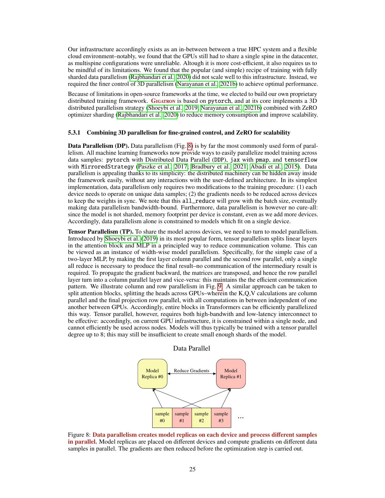
图 9：交替使用列并行与行并行后，两次连续矩阵乘法之间无须通信。 这使张量并行可以高效地把注意力与多层感知机块拆分到不同 GPU。列并行矩阵乘法的输入在全部 GPU 上复制，每块 GPU 独立执行操作；结果已经按 GPU 拆分，可以直接以行并行方式执行下一次矩阵乘法。最后，通过一次 all_reduce 对各 GPU 输出求和。两次矩阵乘法之间的中间结果从不通信。
流水线并行。 模型并行也可以沿深度进行，把模型层分成连续阶段，在不同加速器上执行。不过，简单流水线并行要么效率很低，要么立刻遇到障碍，因为各阶段必须拆分批次，才能并行处理多个前向和反向过程。我们采用 Narayanan 等 [2021a] 的 PipeDream-Flush 调度，如今通常称为 1F1B。当每个模型副本的微批次数较少，通常低于 64 时，Interleaved-1F1B [Narayanan 等，2021b] 等更复杂调度有帮助。批大小预热结束后，我们使用更多微批次，因此没有观察到交错带来的加速。
为了减少通信量，我们始终使用所谓散射-聚集优化。发送到下一阶段的激活先按张量并行度分片，到达下一阶段后再聚集，示意见图 10。这会针对底层互连拓扑优化：执行聚集的节点内 NVLink 通信远快于节点间通信；如果节点间链路还进行了轨道优化，优势更大。这项优化把流水线并行通信量除以张量并行规模，在本系统中即缩小八倍。
优化器分片。 模型权重与梯度存放在连续的 BFloat16 内存缓冲区中。与 Rae 等 [2021] 类似，优化器还保留 FP32 版本的权重和梯度，用于计算更新。使用 Adam 时还需要记录指数移动平均，因此每个模型参数需要 20 字节：
Falcon-7B、40B、180B 每个副本的完整状态分别占用 140GB、800GB 和 3600GB，仅存放权重、梯度和状态，就至少需要 4、20、90 块 40GB A100。
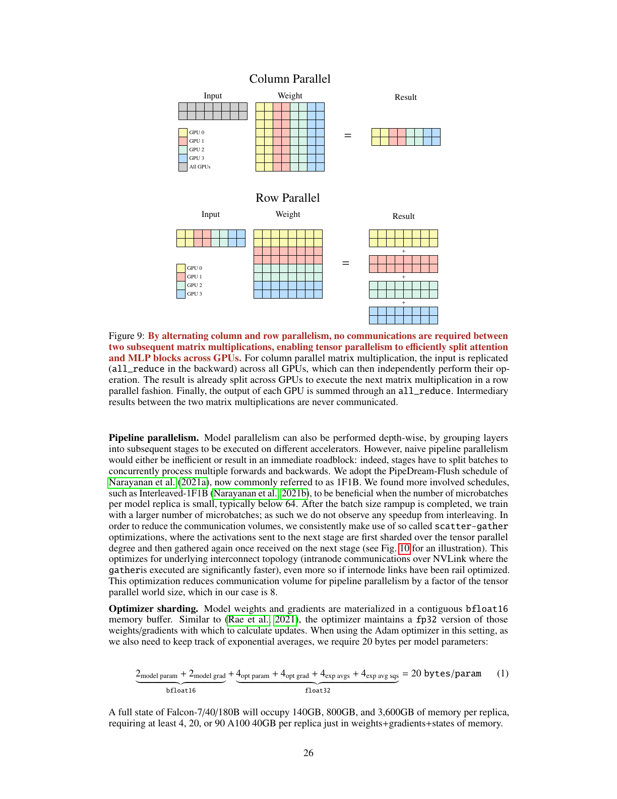
图 10：散射-聚集优化不会让每个秩重复发送完整张量，而是让各秩发送一个分片，再利用高速节点内互连重新聚集。 节点间通信通常比节点内通信慢得多，因此这种模式更高效。散射实际上不需要操作，因为每个秩已经拥有完整张量。节点间轨道优化还能让不同节点中相同秩的 GPU 以最少中间环节点对点通信。
优化器状态本身占内存的 80%，最终成为内存使用瓶颈，导致我们无法通过增加批大小等方式更充分利用 GPU。因此，我们选择在数据并行维度之间拆分优化器状态，这种实践在文献中通常称为 ZeRO-1 [Rajbhandari 等，2020]，见图 11。每个数据并行维度不再保存完整、冗余的优化器副本，而是把优化器独立拆成 $DP$ 份。优化器状态分片后，每个参数的字节数会随数据并行度增加而降低：
Falcon-7B、40B、180B 现在分别只需要 30GB、215GB 和 765GB 内存，即用 1、6、20 块 40GB A100 就能保存一个模型副本；这些数值尚未计算激活内存。
优化器拆分后，反向传播期间的通信负担会增加。首先，对 BFloat16 模型梯度应用 reduce_scatter，为每个优化器分片得到跨全部数据并行维度归约后的相关梯度分片；再把同步梯度块复制到 FP32 优化器梯度缓冲区，供优化器使用。优化器执行更新，得到对应 FP32 分片优化器权重的新副本。最后，使用 all_gather，根据 FP32 分片权重为所有工作进程汇总 BFloat16 模型权重。附录 F.3 提供 ZeRO-1 流程伪代码。有趣的是，总通信量与数据并行通常使用的 all_reduce 相等 [Rajbhandari 等，2020]。
在从 10 亿到 1800 亿参数的全部规模上，优化器分片相较传统数据并行都没有性能开销。事实上，它释放内存后允许使用更大微批次，从而始终带来更好的资源利用率与更高吞吐量。
不使用序列并行。 Li 等 [2021] 提出一种减少训练激活内存的新策略：残差流上的激活在张量并行工作进程之间本来是复制的，可以将其分片。这种分片成本较低：把多层感知机后的 all_reduce 替换为 reduce_scatter，再在下一个解码器块之前执行 all_gather 即可。不过，实现第 5.3.3 节的内存节省措施后，我们发现不再需要序列并行，而且观察到吞吐量略有下降，因此最终训练没有使用它。
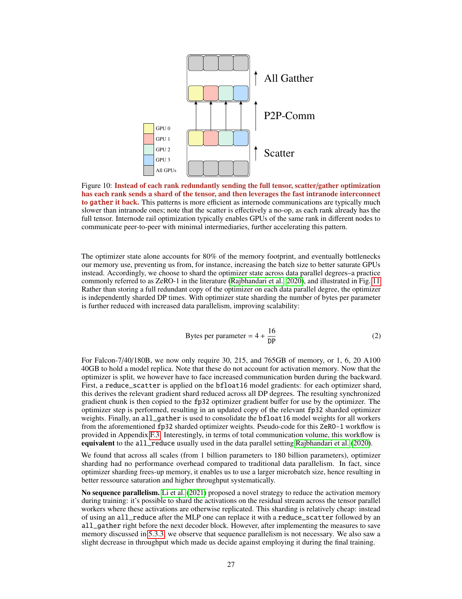
图 11：优化器分片把庞大的优化器状态拆分到不同数据并行维度，从而减少内存占用并提高可扩展性。 释放的内存可以换取更大的微批次，提高吞吐量。图示受 Rajbhandari 等 [2020] 启发。
5.3.2 使用专用 Triton 内核获得最先进吞吐量
FlashAttention。 内存高效的注意力替代方案长期受到社区关注，但它们往往显著改变注意力机制，尤其在扩大规模时容易造成下游性能退化。直到相对近期，人们才开发出不需要在内存中实例化完整注意力矩阵的精确算法 [Rabe 与 Staats，2021]。Dao 等 [2022] 随后证明，采用相同技术的统一内核可以显著加快模型训练。
我们使用 Triton [Tillet 等，2019] 的定制实现，其中包含与 Dao [2023] 同期开发的部分改进。FlashAttention 是训练吞吐量提高的主要来源。它节省内存后，训练无须依赖激活检查点，可以把浮点运算直接用于模型训练；专用 FlashAttention 内核的绝对速度也高于简单实现。有趣的是，与 FP32 标准结果比较，在 BFloat16 下，FlashAttention 的数值精度显著高于传统注意力。
其他 Triton 内核。 旋转位置嵌入与层归一化也使用专用 Triton 内核。旋转嵌入相比未融合 PyTorch 实现的改善尤其明显。由于同一位置的所有注意力头使用相同变换，可以复用昂贵的三角函数；这还简化了使用，因为不需要像其他实现那样把结果缓存在内存中。
5.3.3 通过“单层”实现选择性重计算，高效使用内存
为实现成本效率，我们以 40GB A100 为目标，所以内存占用至关重要。ZeRO 与 FlashAttention 已经显著改善可用内存，我们还通过选择性重计算释放更多空间。Li 等 [2021] 除序列并行外，还建议重新计算部分激活，而不是把输出保存在内存中供反向传播使用，因为激活函数的计算成本通常很低。我们进一步重新计算全部激活函数和层归一化，只在内存中保存层归一化统计量，使重计算非常简单。
总体而言，这种选择性重计算把解码器块的内存消耗降低一半，额外计算又不会降低吞吐量。由于 PyTorch 自动求导引擎的限制，很难只重新计算层归一化而不同时重新计算后续线性层。为了实现这个目标，我们为整个解码器块创建单个定制自动求导函数，并把这种构造称为“单层”。
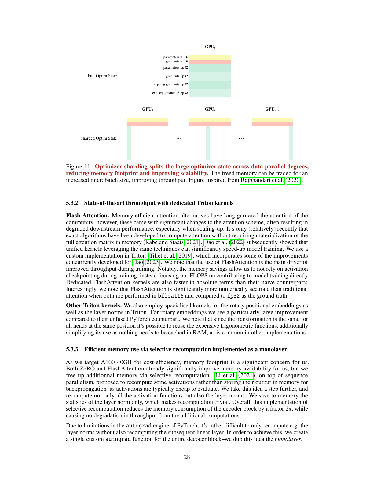
5.3.4 数值精度：只需要 BFloat16 吗？
Brown 等 [2020]、Zhang 等 [2022]、Scao 等 [2022a] 都报告，使用 FP16 训练千亿参数模型会遇到稳定性问题。我们改用 BFloat16 后，训练几乎开箱即用地保持稳定。Rae 等 [2021] 报告，在优化步骤后把 FP32 参数量化为 BFloat16 时使用随机舍入，可以显著改善训练。不过，我们把整个优化器状态保存在 FP32 中，没有观察到类似提升。随机舍入只在初始步骤、优化器状态尚未适应训练动态之前有帮助；很快，不使用随机舍入的训练轨迹也会接近相同路线。
5.3.5 提高灵活性与可靠性的易用功能
与拓扑无关的检查点。 令人意外的是，Falcon 系列开发时，大多数分布式训练库都把检查点格式与分布式拓扑强绑定；改变拓扑需要手动转换检查点格式。由于我们计划在训练期间扩大集群，因此确保模型和优化器检查点可以在任意拓扑配置之间读写，类似 t5x [Roberts 等，2022]。
低偏差数据加载。 把不同来源汇总成混合数据集时，通常会按照每个数据集的目标概率或权重随机采样。不过，这只能保证从期望意义上达到目标概率；更理想的做法是，让训练每个子集中的有效权重保持恒定。我们在不同数据源之间使用预定义采样模式，长度仅为 10000 个序列，但保证包含每个数据源的精确权重。
拓扑发现与优化。 为优化吞吐量，应把高通信量的秩放在彼此接近的实例上。传统高性能计算平台会提供拓扑信息，AWS 却不公开分配给训练任务的实例拓扑。因此，为优化放置，我们先测量所有节点对之间的带宽来发现拓扑，再依据测得拓扑优化秩的放置。
如果简单地让第一个节点依次检查与其他所有节点的带宽，再让第二个节点检查，以此类推，就需要 $O(n^2)$ 次串行测量。通过并行进行多组比较，只需 $O(n)$ 步即可完成，伪代码见附录 F.1。高效发现拓扑后，我们使用 Gromov-Wasserstein 最优传输 [Mémoli，2011] 进行放置：根据测得带宽构造源距离矩阵，根据流水线与数据并行网格中的距离定义目标矩阵，再使用 Python 最优传输工具箱 [Flamary 等，2021] 高效求解。
5.4 运行管理：保持大规模基础设施持续运转
硬件故障。 扩展到数百个节点后，硬件故障越来越常见。Falcon-180B 每在 4096 块 A100 上运行一天，就相当于累计使用超过 11 年。此外，在云端设置中，每次重启运行都会重新抽取一批匿名节点，无法保留此前分配中哪些节点可疑的历史。因此，快速识别并排除故障节点至关重要。
绝大多数硬件故障与有问题的 A100 相关，具体来说是损坏的内存行。这些故障不一定产生 Xid 代码，需要人工测试才能发现，典型表现是计算返回非数值。启动时，我们执行一系列大规模矩阵乘法来捕获故障；训练期间也跟踪通信中的非数值，以快速定位问题节点。启动时还执行简单通信测试，确保通信原语按预期工作。
监控。 我们发现，许多基于网络的监控工具即使没有应用平滑，也会对指标采样，因而可能隐藏尖峰等关键事件。所以我们部署自己的本地查看器。
尖峰。 训练期间只遇到少量尖峰。与 Chowdhery 等 [2022] 类似，发生尖峰后从尖峰前的最新检查点恢复，并跳过 10 亿词元。Falcon-40B 与 Falcon-180B 的训练各遇到九次尖峰。
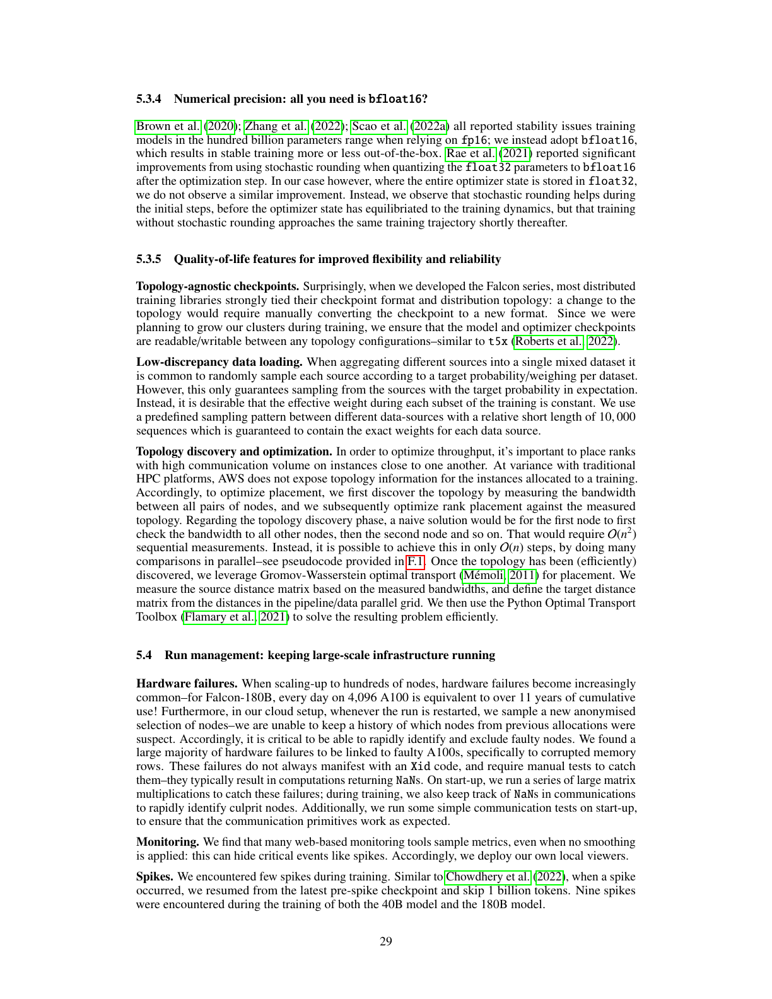
6 结果
背景。 自然语言处理社区已经开发大量基准来评估模型能力，既有受阅读理解考试启发的任务，例如 RACE [Lai 等，2017]，也有世界知识评估，例如 OpenBookQA [Mihaylov 等，2018]，以及所谓常识任务，例如 HellaSwag [Zellers 等，2019]。GLUE 与 SuperGLUE 等经典基准还汇总了许多受语言学启发的任务，衡量词义消歧、蕴含识别等能力 [Wang 等，2018、2019]。
不过，随着大型语言模型能力增强、应用范围扩大，评估格局已经偏离最后一类语言任务。MMLU [Hendrycks 等，2020]、BigBench [Srivastava 等，2023] 等近期基准试图捕捉一般知识与能力，而不再聚焦语言行为，或许是为了更贴近大型语言模型的常见用途。代码评估 [Chen 等，2021] 和数学任务 [Cobbe 等，2021] 也越来越常见。近期模型技术报告还纳入大量学术与职业考试 [OpenAI，2023a；Anil 等，2023]。
随着评估主题变化，评估模型的方法也发生改变。Brown 等 [2020] 普及了零样本和少样本评估的标准设置：大多数经典自然语言处理任务只有少量选项，因此可以计算给定问题时各选项的对数概率，而不必生成自由形式答案。这为模型设下严格边界，简化评估实现与复现，因为不依赖带采样的自回归推理。
但这种不灵活的设置并不总是理想。例如，思维链提示 [Wei 等，2022b] 允许模型在给出最终答案前写出中间推理步骤。对数概率设置也不一定能代表模型的下游使用方式；摘要等常见自由形式任务需要自回归生成，而这类任务又会迅速遇到如何评价答案的新难题。例如 Stiennon 等 [2020] 发现，模型生成摘要的 ROUGE 分数不一定与人类偏好一致。
典型大型语言模型会被部署为聊天机器人或虚拟助手，这是极难量化的使用场景。模型需要适当风格与对话能力、广泛世界知识，还常常需要推理和编程能力。除了有用，这类部署最好还要无害、诚实 [Bai 等，2022a]，使评估与取舍更加复杂。经典自然语言处理方案并不能很好地转化为更好的聊天机器人。
图 12 用 Falcon-40B 的不同微调版本说明这一点：我们在流行的 SuperGLUE 基准 [Wang 等，2019] 和 250 条由人工标注者评价回答的提示上测试模型。流行的 FLAN 方案 [Longpre 等，2023] 得到 SuperGLUE 零样本性能最好的模型，但这个模型也最不受人工标注者偏好。相反，在所谓自指令数据集 [Wang 等，2022b；Taori 等，2023] 上训练，只会较小幅度提高 SuperGLUE，却会显著改善标注者偏好。遗憾的是，收集人工评分远比在 SuperGLUE 上评估昂贵。
图 12：人工评分可能与自然语言处理任务性能冲突。 图中比较在不同数据集上微调的 Falcon-40B 版本，水平线表示 OpenAI API 和人工标注者的基线。星级评分以盲测方式收集，来自 15 名标注者对 250 条不同提示的评价。
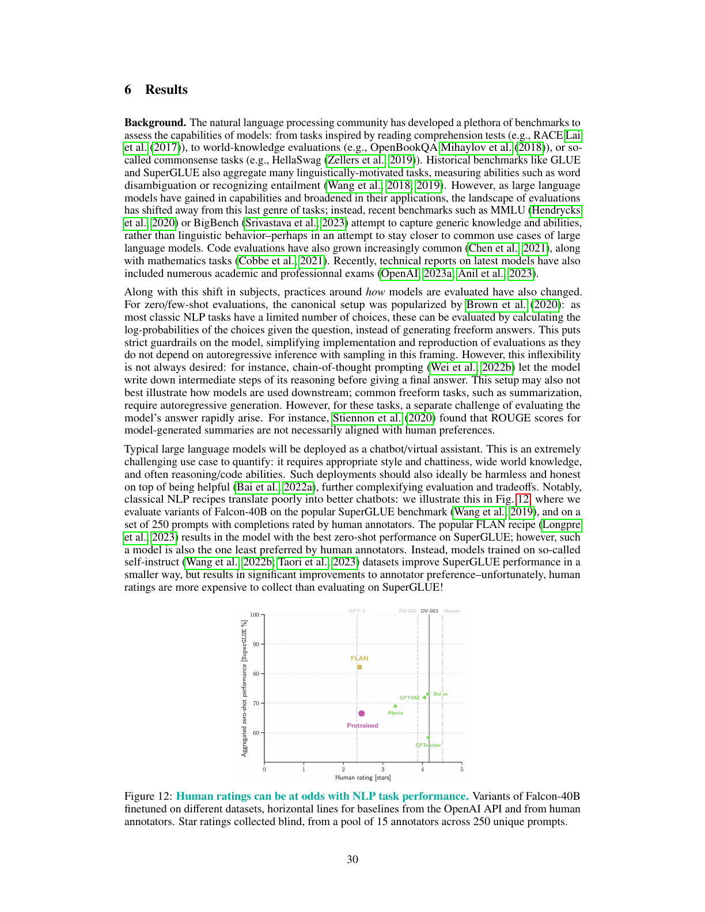
在昂贵的人类偏好数据与廉价的自然语言处理评估之间，近期有人建议使用 GPT-4 等强外部模型充当裁判 [Chiang 与 Lee，2023；Chiang 等，2023；Zheng 等，2023]。它大体受人工智能反馈强化学习启发，后者尝试用模型自身替代 RLHF 中的人工标注者 [Bai 等，2022b；Dubois 等，2023]。不过，这类实践的可靠性仍不明确 [Wang 等，2023]，而且主要用于评估为下游用途微调的模型，不是预训练模型。
最后，跨模型公平比较很困难。首先，任务选择差异很大：PaLM 论文 [Chowdhery 等，2022；Anil 等，2023] 通常复现 Brown 等 [2020] 的设置；近期技术报告 [OpenAI，2023a；Inflection，2023] 使用不同设置下的任意任务组合；Gopher、Chinchilla、LLaMA 等最先进模型也选择报告不同的自然语言处理任务 [Rae 等，2021；Hoffmann 等，2022；Touvron 等，2023a、2023b]。
这些设置缺少标准化。虽然存在 EleutherAI Evaluation Harness [Gao 等，2021]、HELM [Liang 等，2022] 等标准基准，但开放模型采用有限，而且多数论文没有报告评估设置细节，包括使用的提示。数据格式或分词实践的差异会造成任务分数大幅变化 [Fourrier 等，2023]；换言之，适用于所有模型的统一评估尚不存在。第 6.1 节将用具体例子进一步讨论。
我们的评估设置。 本文关注 Falcon 系列预训练模型，因此评估以 Brown 等 [2020] 的经典对数概率设置为中心。这简化了比较，但不同模型之间的公平性问题仍然存在。为处理这些问题，我们把评估分为四组比较：
- 使用 Brown 等 [2020] 的任务，以单样本设置与 PaLM 模型 [Chowdhery 等，2022；Anil 等，2023] 比较；
- 在 GPT-4 论文 [OpenAI，2023a] 报告的一小组少样本任务上比较；
- 在常识、问答和代码任务上与最先进模型比较；
- 与同样报告 EAI Harness [Gao 等，2021] 结果的模型比较，此时提示与指标完全相同。
这套评估只用于广泛、初步地了解模型性能。要判断 Falcon 系列在具体下游场景中的用途，还需要模型经过专门适配后，进行充分、深入的领域评估。
6.1 是否提供提示：跨代码库比较评估
少样本评估中，不同设置主要有两类差异：提示的风格和措辞变化；用于衡量准确率的指标计算差异。
提示方式。 很小的措辞变化就能影响性能，例如单复数、使用“是/否”还是“真/假”、拼写错误等；任务也可以用不同方式表述。Rae 等 [2021] 发现，对多项选择问答，把选项写进提示有利于大模型，却会损害小模型在 RACE [Lai 等，2017] 上的表现；无论要求模型预测答案本身还是对应字母，结论都相同。在 RACE 上，这足以造成 10% 至 20% 的绝对变化。多数常用任务创建于零样本和少样本评估普及之前，所以很少存在标准提示，甚至标准任务表述。绝大多数论文也不报告使用的提示，妨碍复现。
图 13：所有评估都根据模型在给定提示下为各个可能答案分配的对数概率进行排序。 图中灰色部分表示另一种做法，即在提示中显式列出每个候选项。与 Rae 等 [2021] 一致，我们发现这有利于更大、能力更强的模型，却会损害小模型。
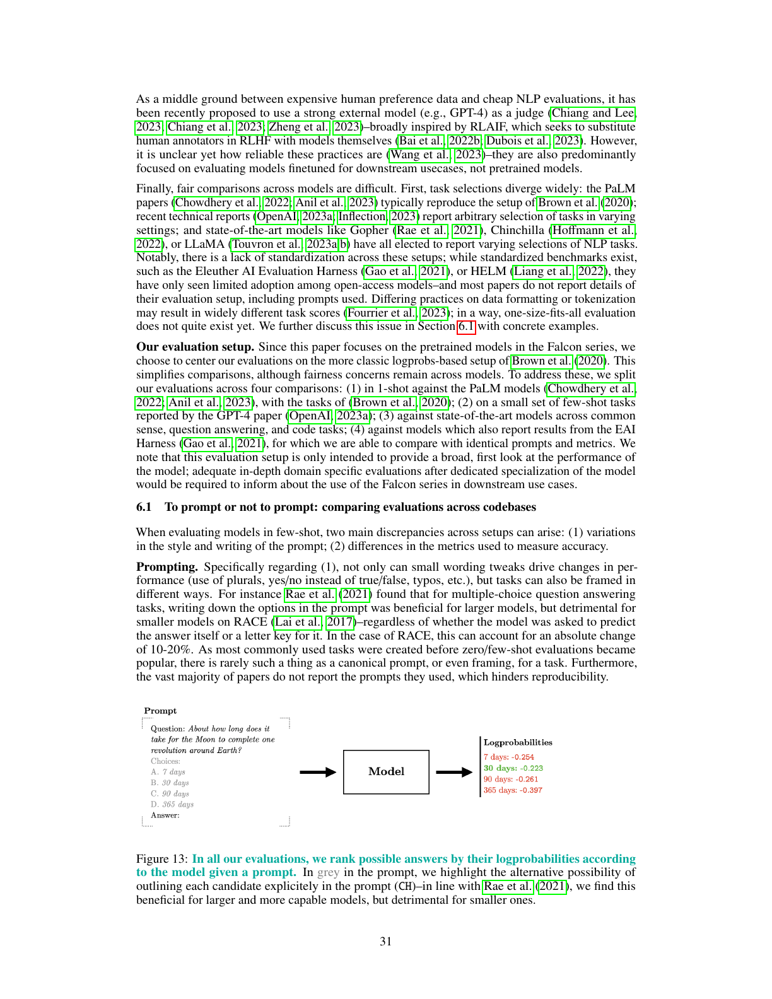
表 17：不同模型规模下，不同提示格式和指标计算方式会得到最佳零样本性能。 在提示中明确列出多项选择选项，几乎总能改善大模型性能，却会损害能力较弱的小模型。无条件归一化的影响较小，对部分任务有益，对另一些任务无益。把两种技巧结合，从未超过单独采用其中最佳一项。
指标。 大多数任务报告准确率，但用于评价候选答案的对数概率计算方式不同。多项选择任务会依次把每个选项作为候选，计算 $P(\text{候选}\mid\text{上下文})$，概率最高的选项作为模型答案。如果答案很长，无法放进单个词元，就把候选答案各词元的对数概率相加，估计完整回答的对数概率。
当选项或回答长度差异很大时，这种方式对较长选项不公平，因为长序列自然概率更低。为补偿这一点，有时会用候选答案长度对对数概率归一化，这构成第一类潜在差异。Brown 等 [2020] 还发现，有些答案只是因为更可能跟在提示末尾的“答案：”后面而获得偏高分数。因此，他们在 ARC、OpenBookQA 和 RACE 上，用每个回答的无条件概率进行归一化：$P(\text{候选}\mid\text{上下文})/P(\text{候选}\mid\text{“答案：”})$。Touvron 等 [2023a] 也在 OpenBookQA 与 BoolQ 上采用这项实践，但其他论文是否使用往往不清楚，因为对数概率计算细节很少公开。
实验。 表 17 探索两个因素在 ARC 与 OpenBookQA 零样本评估中的影响：是否在提示中列出多项选择选项，见图 13；是否用无条件概率归一化。模型包括 Falcon-7B、40B、180B。两种实践的效果随模型规模和任务大幅变化。
在 ARC-Easy 上，无条件归一化始终降低性能；在 ARC-Challenge 上，它改善全部模型；在 OpenBookQA 上，它只改善 Falcon-180B。列出选项会始终损害 Falcon-7B，却始终改善 Falcon-180B。对 Falcon-40B，它在 ARC-Easy 上略微降低性能，在 ARC-Challenge 和 OpenBookQA 上显著改善。结果与 Rae 等 [2021] 在 RACE 上的观察一致，且效果非常显著，Falcon-180B 可获得 10% 至 20% 绝对提升。两种实践结合从未优于单独使用其中一种。
为了公平，我们在与其他论文和模型比较时尽量匹配其评估设置，避免某项技巧给 Falcon 带来不公平优势：
- 与 PaLM 比较。 与 PaLM [Chowdhery 等，2022；Anil 等，2023] 一样复现 Brown 等 [2020] 的设置：多项选择任务不在提示中列出候选项，OpenBookQA 使用无条件归一化；候选项超过一个词元时按长度归一化。提示不作显著调整，尽量接近 Brown 等 [2020]。结果见第 6.2 节。
- 与 GPT-3.5、GPT-4 比较。 MMLU 使用原作者 [Hendrycks 等，2020] 提出的格式；ARC 按 GPT-4 论文 [OpenAI，2023a] 所述，在提示中明确列出选项；HellaSwag 与 Winogrande 沿用 Gao 等 [2021] 的提示。结果见第 6.3 节。
- 最先进模型比较。 这是范围最广、实践差异可能最大的一组比较。OpenBookQA 使用无条件归一化；ARC、OpenBookQA、RACE 在提示中明确列出答案；提示措辞略作调整，但仍接近 Gao 等 [2021] 实现的 Brown 等 [2020] 提示。结果见第 6.4 节。
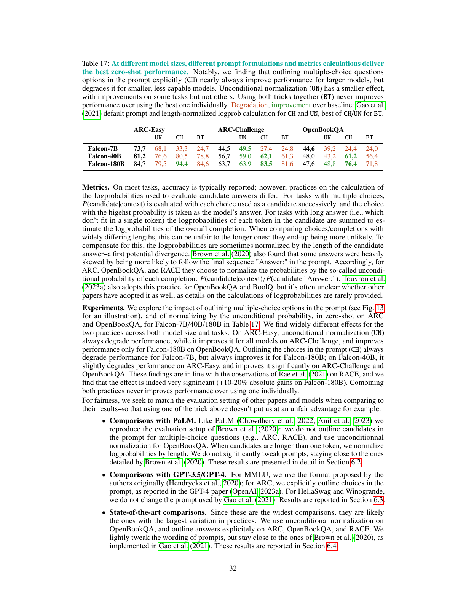
- 与 EleutherAI Evaluation Harness 比较。 严格使用 Gao 等 [2021]，不改变提示格式或对数概率计算，只与采用相同实践的其他论文比较。这是最公平的设置，可以直接一对一比较，不需要猜测其他模型使用的配置。结果见第 6.5 节。
所有设置使用的提示均在附录 G 中提供，以便复现。
6.2 在自然语言任务集合上与 PaLM 比较
设置。 我们在 PaLM-2 论文所报告的单样本自然语言处理任务基准上，与 PaLM [Chowdhery 等，2022]、PaLM-2 [Anil 等，2023] 比较。该基准大体复现 GPT-3 [Brown 等，2020] 的任务集合。由于评估框架中没有实现并验证 StoryCloze 等少数任务，Falcon 结果缺少这些项目。
结果。 详细结果见表 18。对所有任务取平均时，Falcon-180B 达到 PaLM-2 Large 性能的 99.5%，显著高于 PaLM-2 Medium 的 94.8% 与 PaLM 的 94.4%。Falcon-180B 甚至在 HellaSwag、Winogrande、PIQA 等经典基准上超过 PaLM-2。不过，它在 RACE 与 ANLI 两个基准上落后。RACE 对提示和样本格式非常敏感，可能解释部分差异；ANLI 在训练过程中的进展通常呈阶段式跳跃，而不是像 HellaSwag 那样平滑提高。Falcon-180B 可能尚未跨过下一次相变，因而没有追上 PaLM-2 Large 的性能区间。
表 18：Falcon-180B 在多数任务上匹配 PaLM-2 Large，ANLI 与 RACE 是明显例外，其表现更接近 PaLM-2 Medium。 总体而言，Falcon-180B 达到 PaLM-2 Large 性能的 99.5%，明显高于 PaLM-2 Medium 的 94.8%。
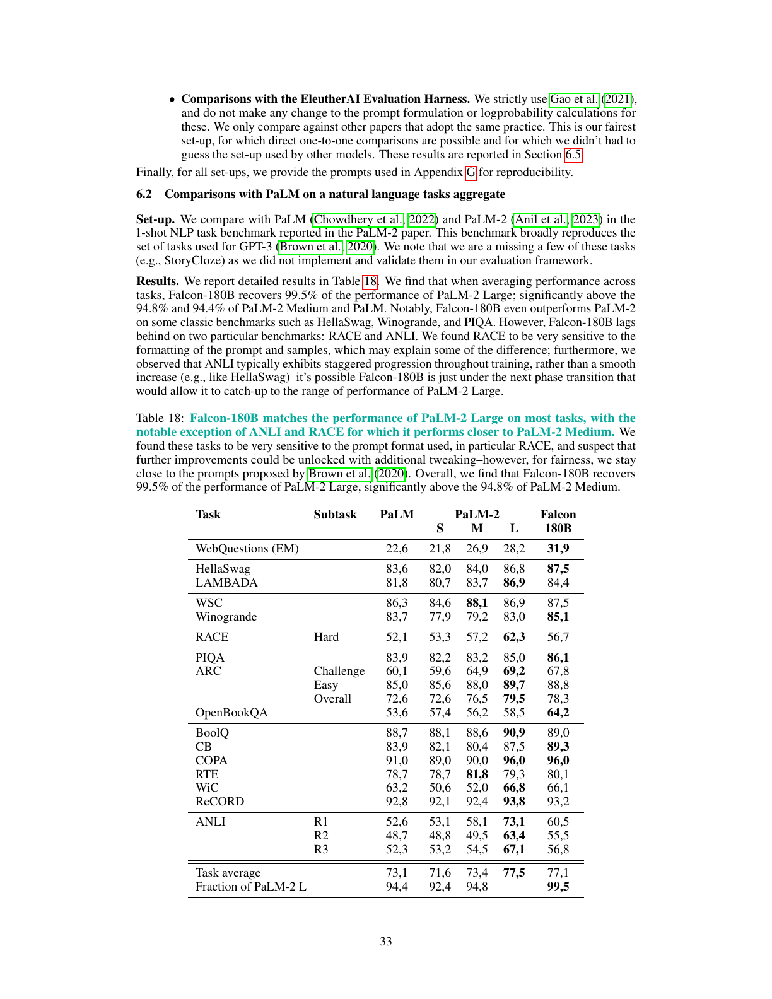
表 19：Falcon-180B 的下游性能位于 GPT-3.5 与 GPT-4 之间。 它在 HellaSwag、Winogrande 等常识任务上表现良好，明显领先 GPT-3.5；在 ARC 与 MMLU 等多项选择问答上也高于 GPT-3.5，但优势较小。ARC Challenge 对 Falcon 报告两样本而非 25 样本结果。
这些分数很强，显示 Falcon 方案具有稳健性。除数据集组成与架构调整外，PaLM-2 Large 与 Falcon-180B 还有两项差异：PaLM-2 Large 的计算预算据称更大，参数量约为 Falcon-180B 的两倍，而训练词元量相近，见附录 E；PaLM-2 使用目标混合 [Tay 等，2022a]，据报告可以增强下游任务性能。以 Falcon-180B 为基座进一步进行训练后适配，例如使用 PaLM-U 方案 [Tay 等，2022b]，可能恢复更多 PaLM-2 Large 的性能。
6.3 在有限任务集上与 GPT-3.5、GPT-4 比较
设置。 我们按照 GPT-4 论文 [OpenAI，2023a] 的报告，与 GPT-3.5 和 GPT-4 在 MMLU、HellaSwag、Winogrande、ARC 等自然语言任务上比较。使用相同样本数，但 ARC 报告两样本准确率，而非 25 样本。
结果。 表 19 显示，Falcon-180B 在全部任务上始终高于 GPT-3.5，但低于 GPT-4。它在常识任务上尤其强：HellaSwag 的表现接近 GPT-3.5 与 GPT-4 的中间位置，Winogrande 则几乎匹配 GPT-4。Falcon-180B 在多项选择问答上的性能更接近 GPT-3.5，但仍始终更高。据称 GPT-4 的预训练计算量是 Falcon-180B 的四至五倍，见附录 E；这很可能解释了两者之间的大部分性能差异。
6.4 在常识、问答与代码任务上与最先进模型比较
设置。 本节将 Falcon 系列与其他模型在常识、问答和代码任务上比较。比较对象包括在 PaLM-2 Large 与 GPT-4 之前先后定义最先进水平的模型：GPT-3 [Brown 等，2020]、Gopher [Rae 等，2021]、Chinchilla [Hoffmann 等，2022]、MT-NLG [Smith 等，2022]、PaLM [Chowdhery 等，2022]、LLaMA-2 [Touvron 等，2023b] 与 Inflection-1 [Inflection，2023]。
常识任务包括 PIQA、HellaSwag、Winogrande、BoolQ 和 LAMBADA。只有 BoolQ 的提示与 EleutherAI Evaluation Harness [Gao 等，2021] 默认提示略有不同。问答数据集包括 ARC、OpenBookQA 与 MMLU。为公平比较，ARC 不列出选项；OpenBookQA 列出选项，否则性能基本不变；MMLU 使用 Hendrycks 等 [2020] 的标准设置。其他模型结果取自上述论文。
代码评估复现 BigCode 模型排行榜的 Python HumanEval 设置，并加入 Codex [Chen 等，2021]、StarCoder [Li 等，2023a]、Code LLaMA [Rozière 等，2023] 等代码专用模型。由于比较对象是 Falcon 完成预训练后的直接版本，不考虑其他模型的指令版本。
常识。 结果见表 20。除 BoolQ 外，Falcon-180B 在全部任务上显著超过此前最先进模型。Falcon-40B 总体略低于 LLaMA-2 34B，我们把这归因于预训练计算量更小：Falcon-40B 为 2800 PF-days，LLaMA-2 34B 为 4700 PF-days，后者高出近 70%。Falcon-7B 也略低于 LLaMA-2 7B；两者计算差异较小，分别为 730 与 970 PF-days，后者高 30%，但我们怀疑 Falcon-7B 只使用一个 64 维键值头的多查询设置过于激进。
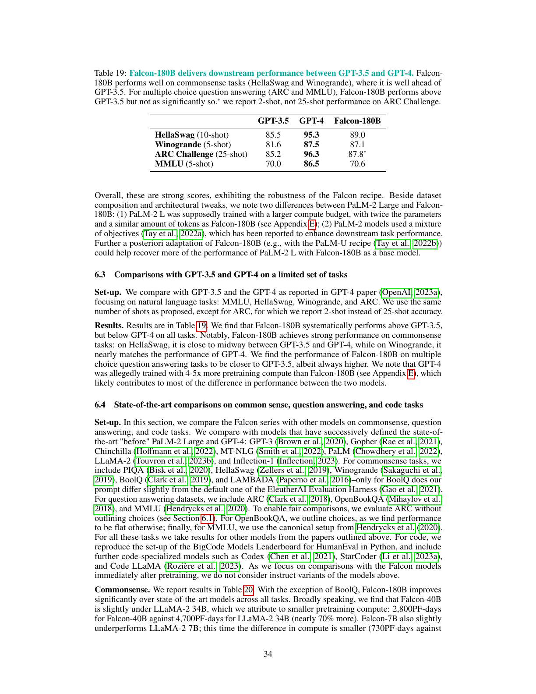
表 20：除 PaLM-2 Large 与 GPT-4 外，Falcon-180B 在常识任务上显著改进 LLaMA-2、Inflection-1 等最先进模型。 Falcon-40B 略低于 LLaMA-2 34B，主要原因是计算预算小得多。Inflection-1 在 BoolQ 上表现异常出色；尽管我们尽力调整提示，仍无法为 Falcon 系列复现 LLaMA-2 论文在 BoolQ 上报告的性能，因此表中结果可能还有改善空间。
LLaMA-2 与 Inflection-1 的整体性能相近，Inflection-1 可能因 BoolQ 的卓越结果而领先。
问答。 表 21 再次显示，Falcon-180B 在问答任务上显著超过其他最先进模型。需要注意，Falcon 系列在 MMLU 上的相对表现略弱于其他任务。我们认为，这可能是因为预训练数据中的网络数据比例很大，而技术来源与 MMLU 问题的风格和内容可能更直接相关。
代码。 HumanEval 结果见表 22。Falcon-180B 在以自然语言为重点的模型中表现最好，只有 Inflection-1 与它持平。事实上，尽管训练数据只有 3% 代码，Falcon-180B 仍几乎匹配 PaLM-Coder 与 PaLM-2 S*；两者都在预训练后经过专门代码适配。这为开发 Falcon-Coder 专用版本带来令人鼓舞的结果。
表 21：Falcon-180B 在问答数据集上显著超过 GPT-3、PaLM 与 LLaMA-2，Falcon-40B 则与 LLaMA-2 34B 大体一致。 Falcon-7B 在 OpenBookQA 上报告不列出候选项时的准确率，否则性能接近随机水平。
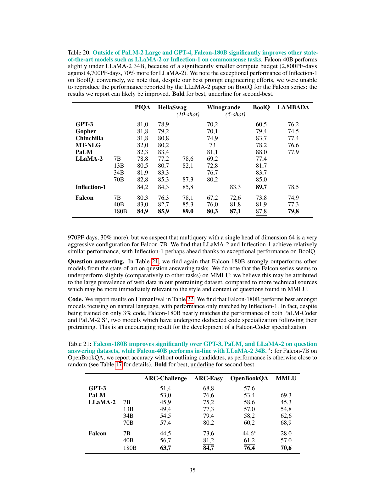
表 22：Falcon-180B 在 HumanEval 上超过所有其他以英语自然语言为主的模型。 尽管只使用 3% 代码训练，它仍几乎匹配经过代码专门适配的 PaLM-Coder 与 PaLM-2 S*。GPT-3.5 和 GPT-4 比较特殊，因为它们似乎在自然语言之外还使用了很高比例的代码预训练。
6.5 使用 EleutherAI Evaluation Harness 与其他模型比较
设置。 最后一组比较只考虑报告过 EleutherAI Evaluation Harness [Gao 等，2021] 评估结果的模型。样本预处理、提示与指标计算完全相同，因此这些结果最容易直接比较。模型包括 BigScience 团队通过 API 评估的 GPT-3、FairSeq [Artetxe 等，2021]、GPT-Neo-1.3B [Black 等，2021]、GPT-J [Wang 与 Komatsuzaki，2021]、GPT-NeoX-20B [Black 等，2022]、OPT [Zhang 等，2022]、Pythia [Biderman 等，2023]、CerebrasGPT [Dey 等，2023]、Aleph Alpha [2023] 与 BLOOM [Scao 等，2022a]。
我们对 HellaSwag、LAMBADA、Winogrande、PIQA、ARC 和 OpenBookQA 的性能取平均。这是根据不同论文的报告实践能够汇总出的最广泛任务集合。需要注意，这些模型大多位于较低计算量范围，最多只有数千 PF-days，性能也明显低于此前比较的其他最先进模型。结果既包括本文的 Falcon 系列，也包括 Penedo 等 [2023] 为性能验证训练的小规模 Falcon-RefinedWeb 模型；后者只使用 RefinedWeb 数据集。
结果。 图 14 显示，Falcon 系列在所有规模上都显著改进这组比较中的其他模型。Falcon-40B 的计算预算更小，却超过 GPT-3 175B。事实上，即使 Falcon-7B 也接近 GPT-3 175B。我们认为，只要延长训练并使用不那么激进的多查询设置，就可能用 70 亿或更少参数匹配原始 GPT-3。仅使用 RefinedWeb 训练的小型验证模型同样表现良好，复现了相同规模 GPT-3 模型的性能。
从更广角度看，图中还显示一些总体趋势。多数较早的模型系列性能非常接近，以 GPT-3 系列为上限。OPT 在较小规模下表现较弱，最终仍能匹配 GPT-3 175B。两个离群系列格外突出：GPT-Neo-1.3B 是第一个开源大型语言模型，预训练可能存在问题；BLOOM 系列则可能受高度多语言的预训练数据，以及嵌入后保守使用额外层归一化的影响 [Scao 等，2022b]。
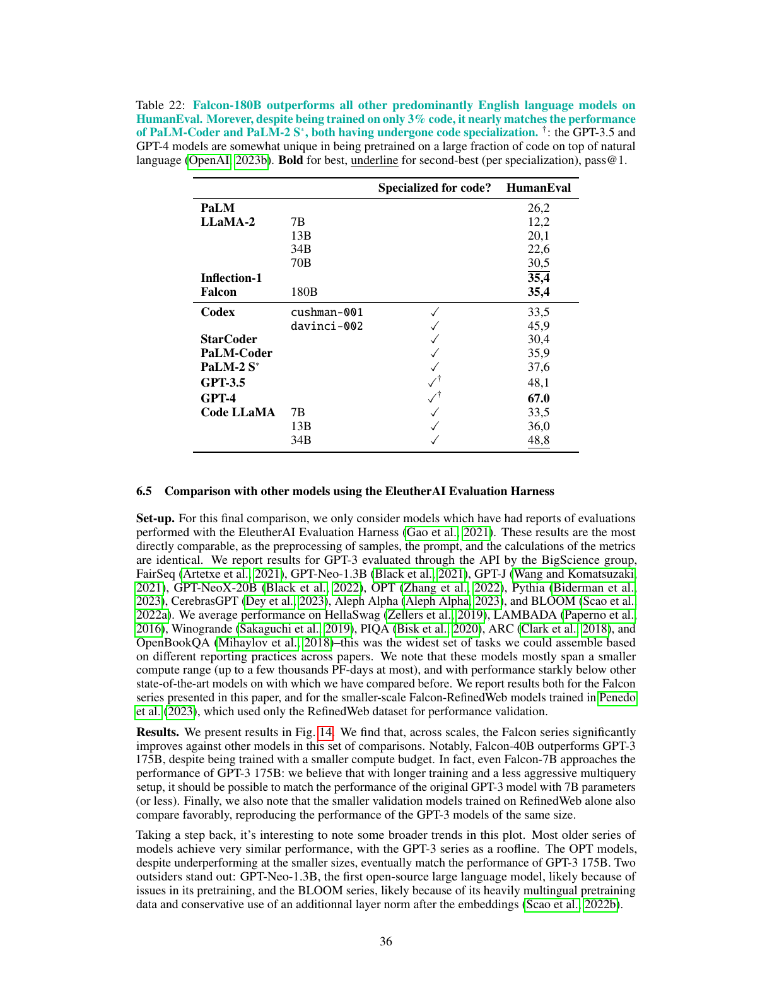
图 14：与报告过 EleutherAI Evaluation Harness 结果的模型相比，Falcon 系列在全部规模上都显著改善。 仅使用 RefinedWeb 训练的模型也复现了 GPT-3 系列性能，尽管没有使用精选数据。聚合指标是 HellaSwag、LAMBADA、Winogrande、PIQA、ARC 和 OpenBookQA 的零样本准确率。
7 局限
本节说明研究发现与 Falcon 模型本身的局限，既用于限定模型的潜在应用，也用于指出后续研究方向。总体而言，这些局限来自两个因素：Falcon 系列的大部分研究在 2022 年 12 月模型开始训练前完成，而大型语言模型领域随后取得了重要进展；计算资源限制又妨碍了对部分方向开展更全面的探索。
7.1 研究发现与消融实验的局限
规模。 消融实验使用训练到计算最优点的 10 亿和 30 亿参数模型。虽然最终架构与数据集又通过使用 3500 亿词元训练的 10 亿、70 亿参数模型验证，但计算预算仍比实际 Falcon 模型低一个数量级。随着模型规模增大，其他工作发现异常特征会涌现，可能推动本设置无法捕捉的重要动态 [Dettmers 等，2022]。从数据角度看，模型越大就越容易记忆 [Carlini 等，2022]，可能造成灾难性质量退化 [Hernandez 等，2022]。
基准。 消融实验只使用基于对数概率的评估，在有限任务集上衡量零样本性能。下游任务性能可能与真实人类偏好冲突，图 12 就展示了我们自己的经历；任务集也没有捕捉编程或多语言性能。评估通用语言模型十分困难，单个聚合指标往往无法表达建模或数据干预带来的细微差异。
总体而言，在我们的任务集上，没有任何干预稳定地只改善某项指标而不改善其他指标。例如，加入技术数据并未持续提高 SciQ 或 PubMedQA。这很可能是小规模设置的局限，因为它最终主要衡量一般性收益。MMLU [Hendrycks 等，2020]、AGIEval [Zhong 等，2023] 等流行基准的性能，很可能可以通过专门领域内数据改善。
我们尤其认为，值得在更大规模上消融最优预训练数据组成，并更好地理解去重的量化和质化影响。例如，网络数据去重可能格外有效，是因为它恰好过滤了部分最差样本。总体上，第 4 节只是一组初步实验，用于为 Falcon 决策提供依据和广泛验证。未来实践者很可能需要在更大规模上重新审视这些实验，以便用更广泛基准更好地刻画性能。
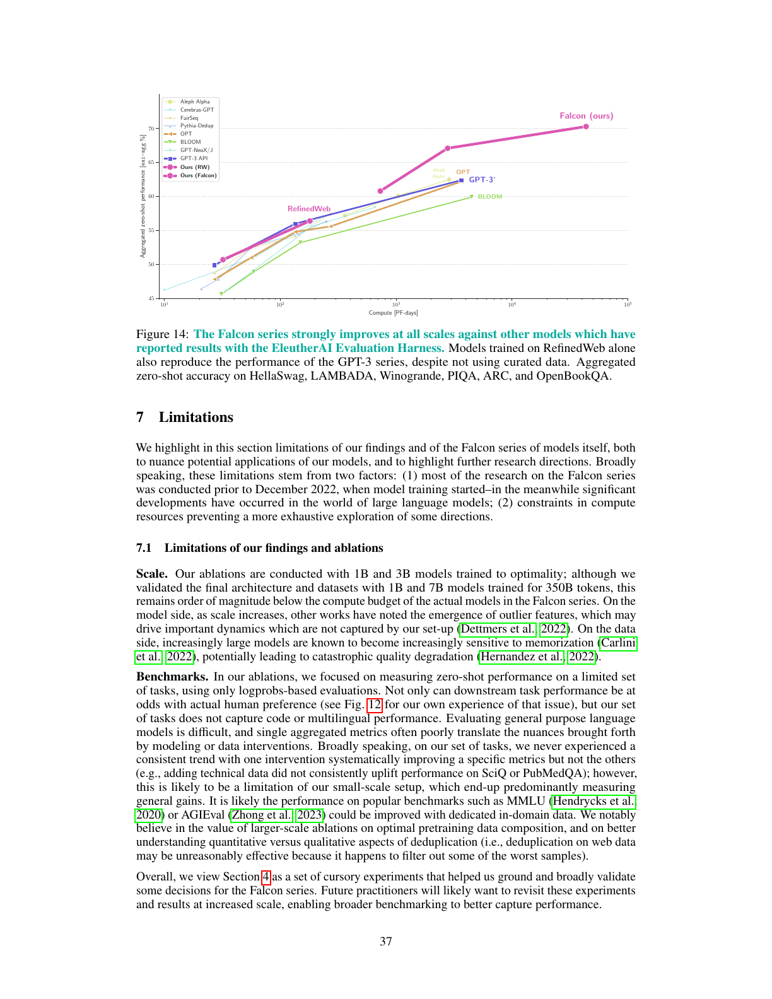
7.2 Falcon 模型的局限
解耦训练与推理计算。 过去一年大型语言模型的采用急剧增长，下游使用显著增加。在这种范式下，推理成本可能成为主导，掩盖预训练成本。较小开源模型也更容易让社区继续开发，支持本地部署甚至微调。扩大预训练时，额外计算可以用于扩大模型或延长训练。增加参数量会延续到推理阶段，提高模型整个生命周期的成本；延长预训练则不会，因此提供了一条解耦训练与推理计算的轴。
LLaMA 系列等近期开源模型 [Touvron 等，2023a、2023b] 已采用这项实践，最终把 70 亿至 700 亿参数模型都固定训练 2 万亿词元。Falcon-7B 遵循类似思想，但 40B 与 180B 更接近 Hoffmann 等 [2022] 建议的预训练最优点，使 Falcon 系列部署更加困难。
当时这项决策部分受数据可用性限制。我们很早就决定严格只训练一轮，而开始训练时 RefinedWeb 的总词元库存尚不清楚，数据处理任务到一月初才结束。近期工作则认为，至少对百亿参数规模模型，训练最多四轮可能只造成很小性能退化 [Xue 等，2023；Muennighoff 等，2023]。根据最终约 5 万亿英文词元和 1 万亿代码词元的可用数据，我们建议未来模型至少训练 4 万亿至 5 万亿词元，大模型则倾向训练 10 万亿至 15 万亿词元。
这会给预训练带来新挑战，因为大模型更容易高效分布。我们也看好通过逐层专家混合，即路由语言模型 [Clark 等，2022；Fedus 等，2022]，从架构层面解耦训练和推理计算。专家混合模型只稀疏激活参数，可以再把推理成本降低 8 至 16 倍。
代码性能与预训练数据。 由于不允许提高预训练子集的采样比例，Falcon 主要在 RefinedWeb 网络数据上训练。代码比例也很保守，而可用数据本可支持 10% 至 30% 代码。对未来模型，我们建议显著提高代码数据比例，并可能提高能代表常见用途或目标下游领域的数据来源采样比例。
代码数据尤其有前景，因为可以从 GitHub 这个统一来源大量获得，还能像网络数据一样大规模处理；去重对代码也极其有效 [Kocetkov 等，2022；Allal 等，2023；Li 等，2023a]。GPT-3.5 与 GPT-4 看起来也在自然语言和代码混合数据上训练 [OpenAI，2023b、2023a]。这种语言与代码混合模型可能更容易适配成下游聊天机器人，因为后者可能广泛使用代码来回答问题或调用各种工具。
合成数据同样有潜力 [Gunasekar 等，2023；Li 等，2023b]，但许多当前方法更接近蒸馏，而不是真正预训练；如何用它们引导出一类更大的新模型，而不仅仅用于下游适配，仍不清楚。
更长序列。 所有 Falcon 模型都使用 2048 序列长度预训练，这会限制多轮聊天或代码场景。由于使用旋转位置嵌入 [Su 等，2021]，可以在训练后适配更长序列。kaiokenmdenv [2023] 与 Chen 等 [2023] 同期发现，通过插值和轻量微调，可以扩展旋转位置嵌入模型的上下文长度。我们自己的长上下文微调实验发现，RefinedWeb 中长上下文数据很丰富：超过 13% 的词元来自长度超过 8000 词元的文档，1.5% 来自超过 32000 词元的文档。LLaMA-2 Long [Xiong 等，2023] 进一步改进这条路线，在多样本任务上获得显著性能提升，例如第 6.3 节的 MMLU 与 ARC。
只关注预训练模型。 虽然我们提供轻度调节的 Falcon 版本以展示指令或聊天模型的可能性，本工作主要研究预训练版本。部署 Falcon 前，强烈建议配置适当护栏，并针对目标用途系统开展偏见和伤害评估。人类反馈强化学习不仅可以让模型更有用，还可能增强它对对抗性查询的稳健性 [Ganguli 等，2022]。类似 PaLM-Coder、PaLM-2 S* 或 Code LLaMA 的 Falcon 代码适配也很有潜力。
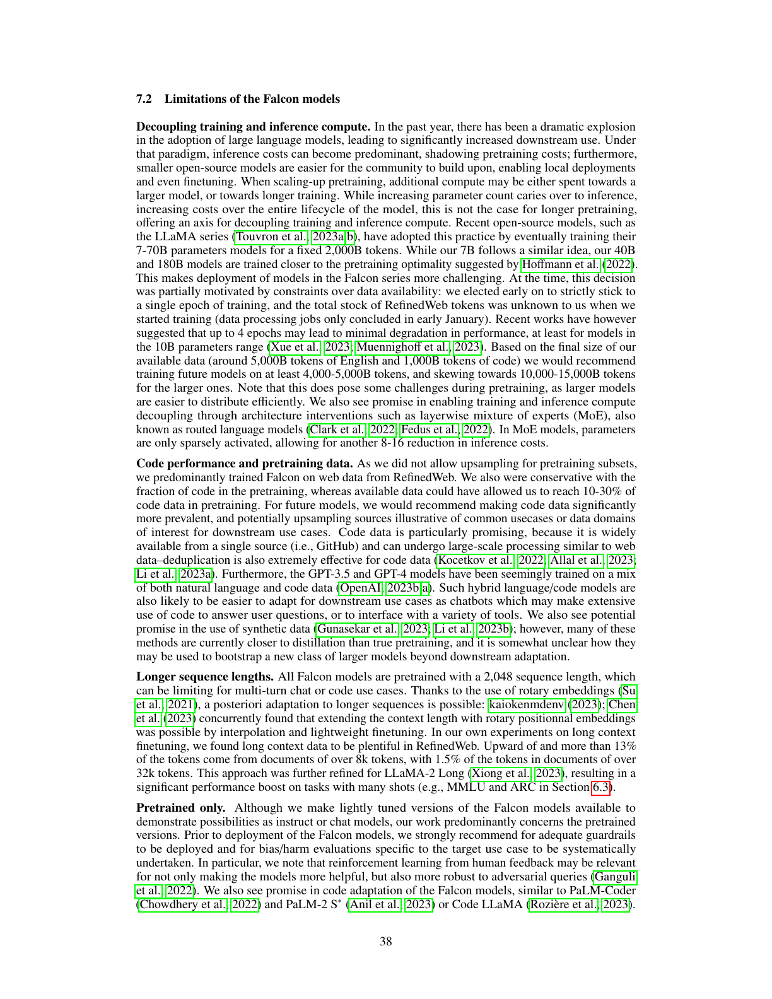
8 结论
本文介绍并详细说明 Falcon 预训练模型系列，包括 Falcon-7B、40B 与 180B；训练数据最多达到 3.5 万亿词元。
首先，我们说明为准备 Falcon 训练数据集和架构所做的消融与实验。经过充分过滤和去重的网络数据是出人意料的强基线。对大模型记忆问题的顾虑 [Carlini 等，2022；Hernandez 等，2022] 促使我们不提高任何来源的采样比例，并主要使用网络数据训练。架构方面，大多数干预影响有限；我们采用多组注意力，即多查询注意力 [Shazeer，2019] 的扩展，通过显著减小键值缓存来提高推理可扩展性。对未来 Falcon 系列，我们看好显著增加代码在预训练数据中的比例，并分阶段使用更长序列训练，例如前半程最长 8000，后半程最长 16000，再通过下游适配扩展到 32000 至 256000。
随后，我们说明最终 Falcon 预训练策略的实现。数据流水线在 Penedo 等 [2023] 中有详细报告；本文介绍对话掩码，以及在成本高效云基础设施上运行的分布式训练策略，特别是三维并行与 ZeRO 的结合。我们还讨论快速、内存高效训练的方案，例如 Triton [Tillet 等，2019] 中的专用 FlashAttention [Dao 等，2022] 内核与“单层”策略，以及超参数设置和数千块 GPU 运行管理的细节。
最后，我们概述 Falcon 系列在关键基准上的结果。Falcon-180B 接近 PaLM-2 Large [Anil 等，2023]，整体位于 GPT-3.5 与 GPT-4 [OpenAI，2023a] 之间。Falcon-180B 是当时最好的开源模型，也很可能是整体最佳模型之一。评估主要集中于经典自然语言任务；对于经过专门微调或强化学习的 Falcon 下游版本，还需要进一步研究人类偏好。
为了促进大型语言模型开放研究并加速该领域技术发展，我们以宽松开源许可证公开以下成果：
- Falcon-7B、40B、180B。 Falcon-7B 与 40B 使用 Apache 2.0 许可证，Falcon-180B 使用专门的负责任人工智能使用许可证。发布时，Falcon-180B 是可获得的最强开放大型语言模型。
- RefinedWeb 的 6000 亿词元子集。 供研究者研究大规模过滤、去重网络数据，也供实践者把它作为高质量网络数据的标准。我们还开源在该子集 3500 亿词元上训练的 10 亿、70 亿参数模型。
- 详细研究记录。 本文与 RefinedWeb 论文 [Penedo 等，2023] 详述了 Falcon 系列的大量决策与实验。
我们相信，大型语言模型将是人类文明未来的一项基础技术，因此也应以负责任的方式共享。广泛交流思想一直是历史上加速技术与经济进步的关键，而这种加速会让所有人受益。开源人工智能研究与模型可以培育更广泛、更多样化的社区，并通过活跃协作提高大型语言模型的安全性和可靠性。我们希望 Falcon 系列能成为迈向这一愿景的一小步。
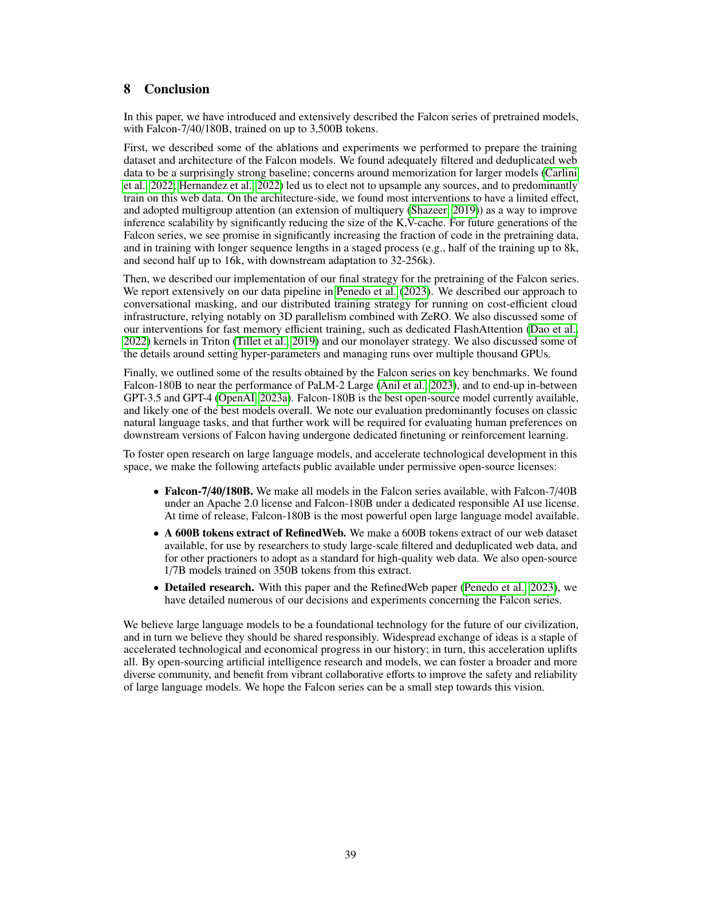
参考文献
原论文参考文献共 11 页，以下按 PDF 页序完整保留，作者、题名、出版信息与链接均可直接核对。
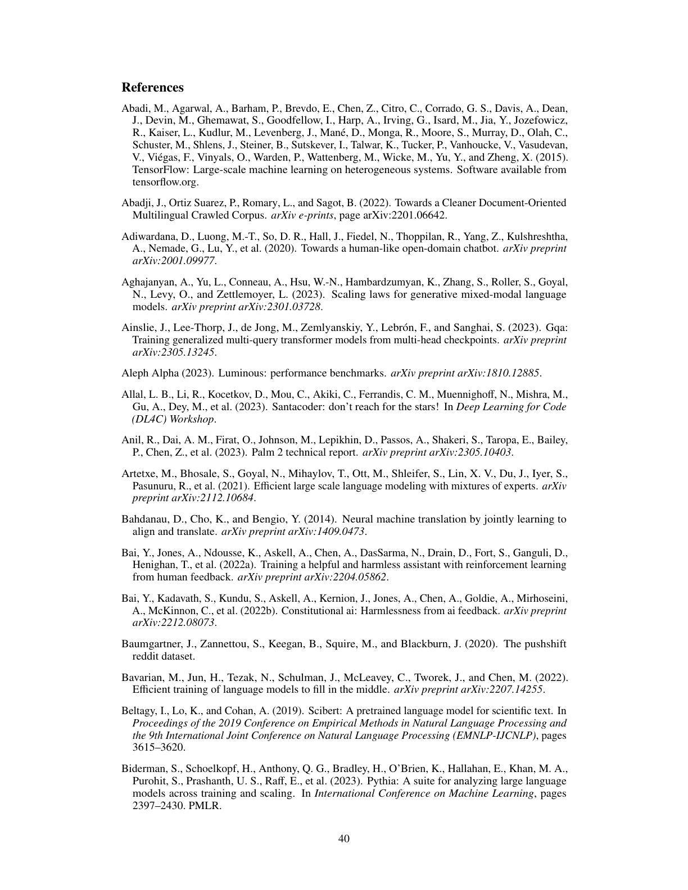
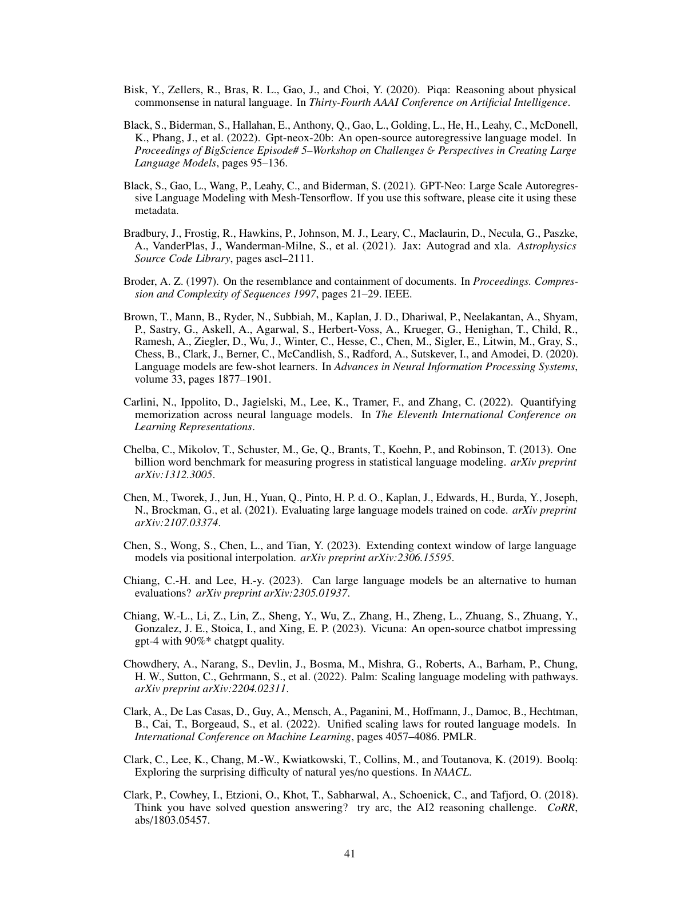
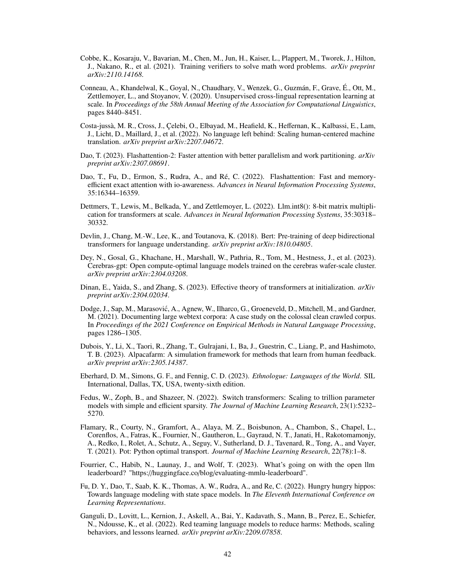
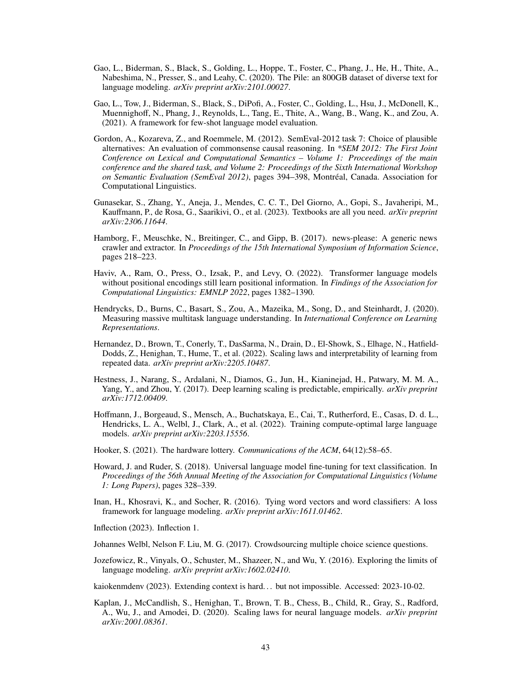
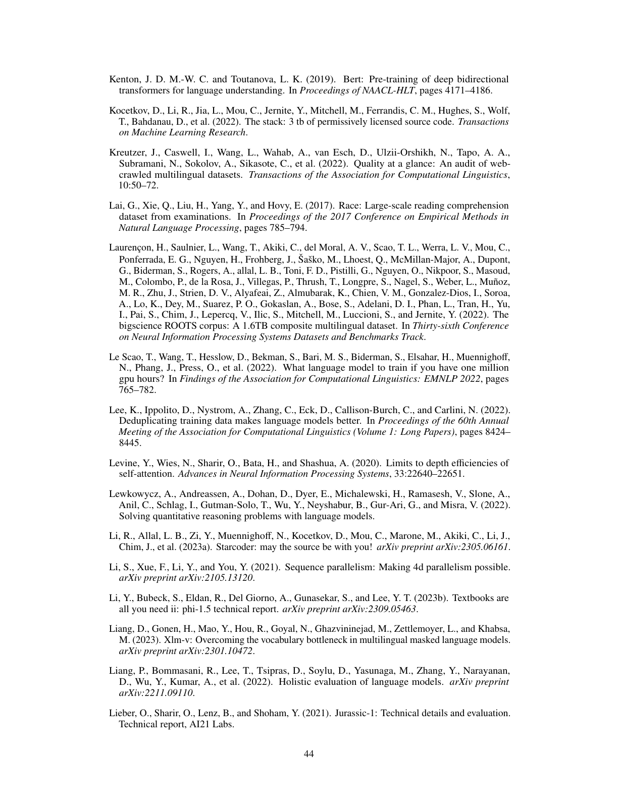
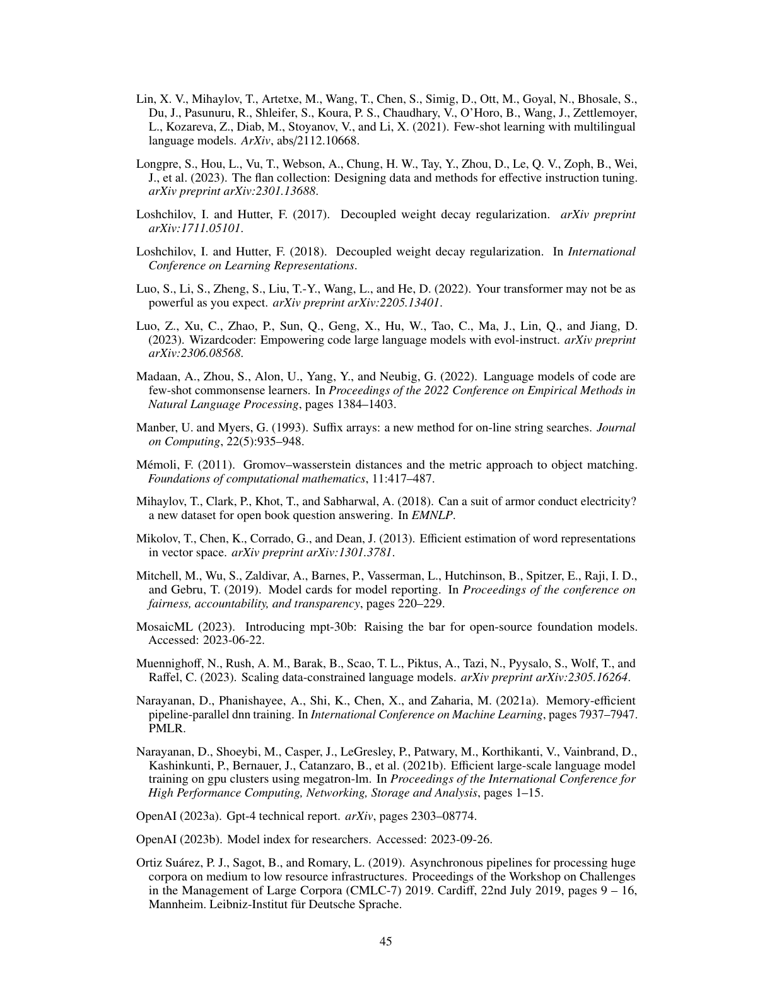
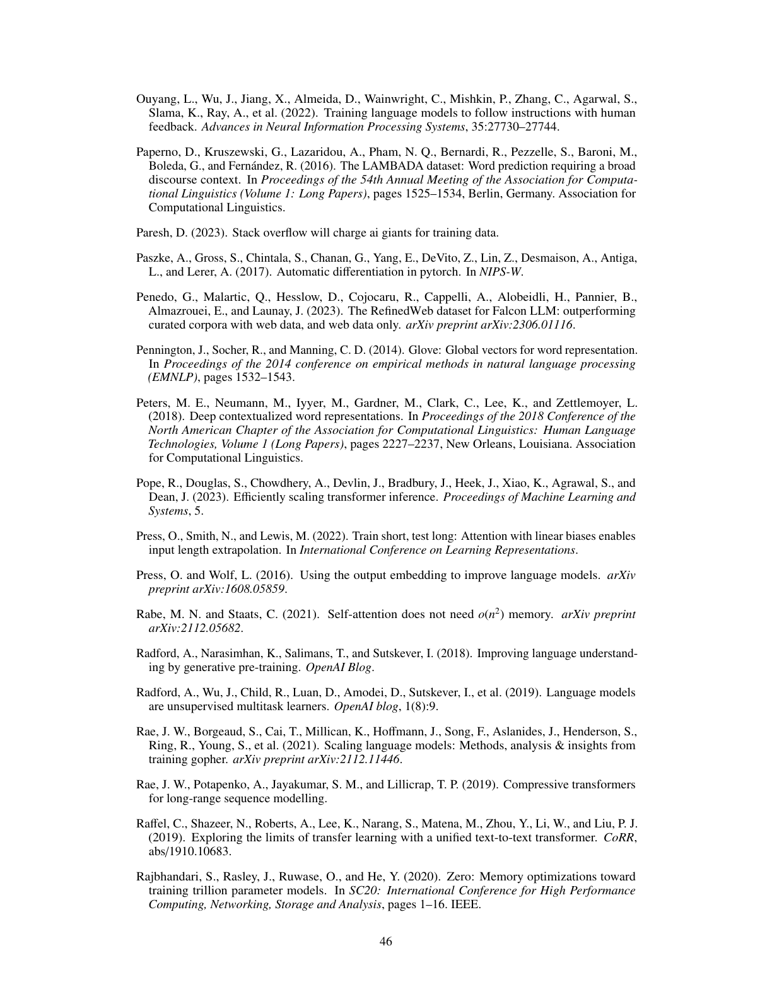
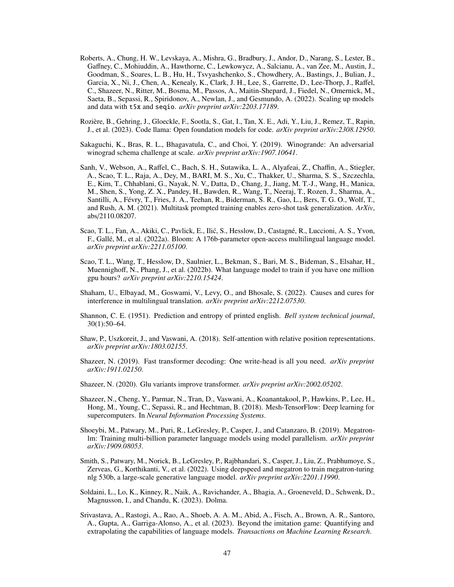
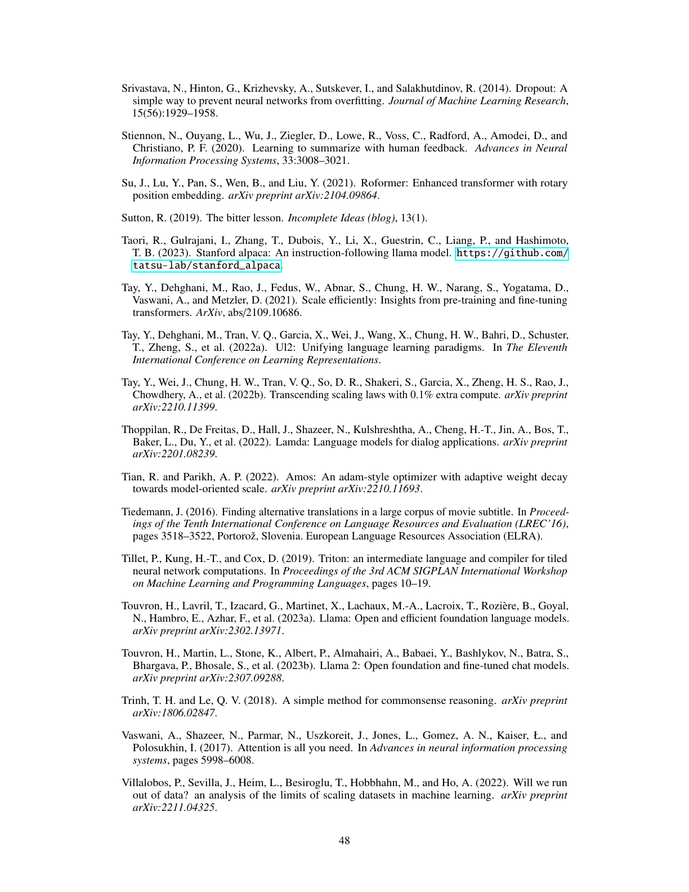
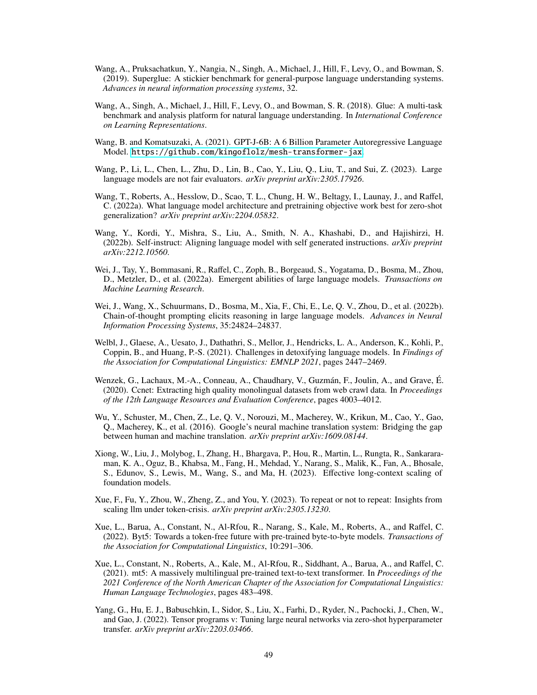
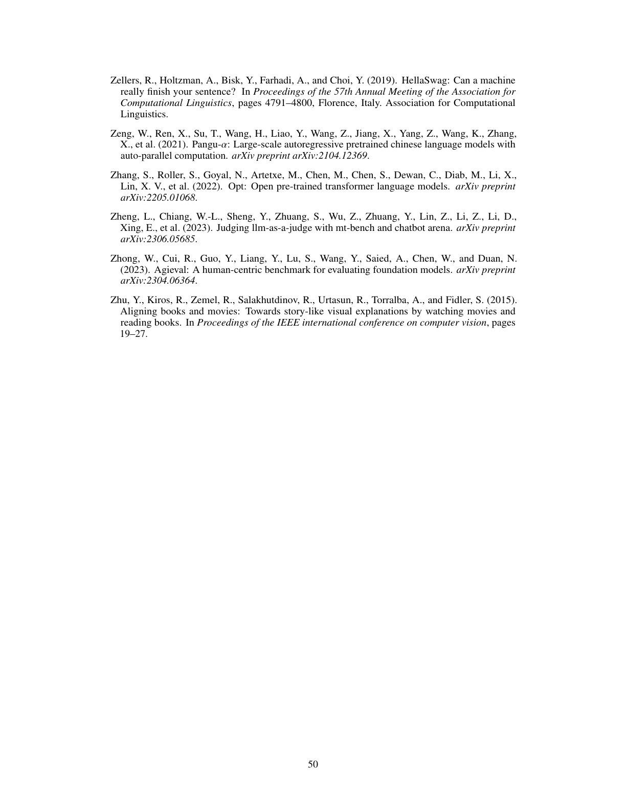
附录 A 作者贡献
- 工程与工具。 分布式训练代码库由 Baptiste Pannier、Daniel Hesslow 负责；网络数据由 Guilherme Penedo、Ruxandra Cojocaru（多语言数据）、Quentin Malartic（数据质量）、Alessandro Cappelli、Hamza Alobeidli 负责；精选数据由 Alessandro Cappelli、Etienne Goffinet（代码数据）、Quentin Malartic、Ruxandra Cojocaru、Abdulaziz Alshamsi（图书数据）负责；推理由 Daniel Hesslow、Baptiste Pannier、Guilherme Penedo（部署）负责；基础设施由 Daniele Mazzotta、Etienne Goffinet、Guilherme Penedo 负责；硬件正确性由 Baptiste Pannier、Julien Launay、Daniel Hesslow 负责。
- 预训练。 Baptiste Pannier、Julien Launay、Daniel Hesslow。
- 研究。 数据消融由 Julien Launay、Ruxandra Cojocaru（课程学习）、Alessandro Cappelli、Quentin Malartic（细粒度过滤器）、Daniel Hesslow 负责；架构消融由 Julien Launay、Daniel Hesslow、Etienne Goffinet、Quentin Malartic（训练目标）、Baptiste Pannier、Badreddine Noune（优化器）负责；模型微调由 Quentin Malartic、Alessandro Capelli、Etienne Goffinet（代码专用化）、Guilherme Penedo（人工评估）、Baptiste Pannier（长上下文）、Julien Launay 负责；评估由 Julien Launay、Daniel Hesslow、Quentin Malartic 负责；论文写作由 Julien Launay、Daniel Hesslow、Alessandro Cappelli、Baptiste Pannier、Ebtesam Almazrouei 负责。
- 领导。 Julien Launay、Ebtesam Almazrouei、Mérouane Debbah。
附录 B 致谢
感谢 AWS 团队，尤其是 Olivier Cruchant 在整个项目期间的支持，最终帮助我们把 Falcon-180B 训练扩展到最多 4096 块 A100。也感谢 Axel Marmet、Tri Dao、Dan Fu、Colin Raffel、Katherine Lee、Thomas Wolf、Iz Beltagy 和 Dirk Groeneveld 在项目期间提供富有洞见的讨论。
附录 C 模型卡
模型详情。 Falcon 模型由技术创新研究院创建，训练从 2022 年 12 月开始，在 2023 年上半年完成。它们是使用因果语言建模目标训练的自回归 Transformer，架构以 PaLM 为基础，扩展多查询注意力以支持张量并行，即多组注意力，并包含不使用 SwiGLU 等小幅调整。Falcon-7B 与 Falcon-40B 使用 Apache 2.0 许可证，Falcon-180B 使用含负责任使用限制的 Falcon-180B TII 许可证。
预期用途。 主要用于大型语言模型研究，并作为进一步适配到聊天机器人等特定用途的基础；主要用户是自然语言处理研究者与工程师。未经充分风险评估与缓解就用于生产，以及可能被视为不负责任或有害的用途，均超出范围。
相关因素。 Falcon 主要使用代表互联网分布的大规模英文网络语料训练，因此会携带网络中常见的刻板印象与偏见，也不太可能在英语或使用拉丁字母的欧洲语言之外良好泛化。底层预训练数据集的毒性与 The Pile 等常见精选预训练数据集大体一致，但这一判断只涵盖 Perspective API 定义的“粗鲁或不尊重内容”，不包括社会偏见或有害性问题。
指标与评估数据。 评估重点是模型在广泛任务上的零样本泛化能力，使用 EleutherAI 语言模型评估工具。由于训练 Falcon 成本很高，无法多次训练并测量不同运行之间的变化。模型在 18 个自然语言任务和一个 Python 编程任务上评估，任务选择用于构建与文献中其他模型的比较。大部分任务使用 Gao 等 [2021] 的默认预处理，自定义提示见附录 G。训练数据另见 RefinedWeb 专用数据表。
表 23：Falcon 模型卡。 表格遵循 Mitchell 等 [2019] 提出的框架。
附录 D 数据表
完整数据表见 RefinedWeb 专文 [Penedo 等，2023]。
附录 E 与未公开技术细节模型的比较
一些近期模型选择发布内容很少、偏宣传性质的技术报告，而不是记录充分的研究论文；它们通常只提供零散评估，建模细节也经常缺失。这使比较非常困难。更麻烦的是，许多细节最终通过泄漏或非正式渠道为人所知，而这种形式很难正确引用和署名。对于 Anil 等 [2023]，CNBC 报告了三个模型中最大模型的参数量与预训练长度；对于 OpenAI [2023a]，多项泄漏信息由 SemiAnalysis 的一篇文章汇总。
附录 F 伪代码示例
F.1 高效测量全节点互连带宽与延迟的测量计划
伪代码构造并行节点配对，使全部节点对的比较从简单方法所需的 $O(n^2)$ 个串行步骤降至 $O(n)$ 步。
F.2 把树中词元深度转换为注意力掩码
伪代码根据深度优先序列中的树深度，判断当前词元能否关注另一词元，从而屏蔽不同分支或更深层级的对话内容。
F.3 ZeRO-1 伪代码
伪代码展示梯度的 reduce_scatter、优化器更新，以及把 FP32 分片优化器参数重新汇总为 BFloat16 模型参数的 all_gather 流程。
附录 G 提示模板
第 4 节与第 6.5 节使用 EleutherAI Harness [Gao 等，2021] 的默认提示，目标是复现 GPT-3 [Brown 等，2020] 的评估设置。第 6.2、6.3、6.4 节使用后续页面所列提示；没有单独指定时使用 EleutherAI Harness 默认提示。为与 PaLM-2 公平比较，第 6.2 节从不在多项选择提示中列出候选项；后续截图中被省略的这部分内容以灰色表示。
“上下文”只在提示开头添加一次；每个样本重复一次“示例”，除最后一个样本外都会提供答案；系统根据此前上下文和样本计算各候选项的对数概率。斜体内容从任务数据中读取，截图为说明使用训练集，实际评估则尽可能使用测试集或验证集。候选项用逗号分隔列表表示，并始终在前面保留空格以便分词。
第 54 页给出 ANLI 与 ARC 的上下文、示例和候选项格式。
第 55 页给出 RTE、LAMBADA 与 OpenBookQA 提示模板。LAMBADA 不受预定义候选集限制，而是判断正确补全是否为模型整体最可能的输出；OpenBookQA 在不列出选项时直接以答案文本作为候选。
第 56 页给出 RACE 提示模板。Brown 等 [2020] 与 Gao 等 [2021] 的实现按文章级别计算样本数；每篇文章始终提供三个问题，即使在零样本设置中也是如此。
第 57 页给出 BoolQ、CB、COPA、WiC 与 Winograd 提示模板。COPA 保持 Gao 等 [2021] 的格式，仅增加指令；Winograd 同样保持原格式，但把候选项中的“是/否”替换为“真/假”。